General Design and Systems Overview
Flight Control Systems
Engines
The F-4E Phantom is powered by two J79-GE-17 engines built by General Electric, with a rated static sea-level power delivery of 11,870 pounds of thrust in Mil, and 17,900 pounds in afterburner. The engines have provision for both assisted pneumatic start at fields with an available cart, or via a propellant cartridge to initiate spinup. Similarly, the engines can utilize the aircraft's internal battery for initial power, or connection with an external power cart.
Fuel Flow Indicators

Each engine has a fuel flow indicator found in the front cockpit instrument panel. The indicators read in thousands of pounds per hour, from 0 to 12. The indicators provide flow rate up to Mil power; when afterburner is engaged, a separate fuel delivery system is used to provide fuel directly to the afterburner stage, and the flow rate is approximately 4 times the value shown.
Oil Pressure Indicators

Oil pressure indicators are on the front cockpit pedestal panel, and are graduated from 0 to 10, and are presented in 10 lb increments.
Variable Duct Ramp
Optimization of air to the engines is performed by a Variable Duct Ramp system directed by the ADC; this optimization uses a pair of variable ramps to decelerate incoming air to subsonic for best engine performance. In the event limits are exceeded for inlet temperature, the Duct Temperature High Indicator Light (DUCT TEMP HI) on the telelight panel will illuminate. Permitting the issue to continue can cause permanent engine damage.
Engine Starting System
Pneumatic Mode Starting
The normal mode for starting the Phantom utilizes an auxiliary start cart that turns the starter turbine, cranking the engine over.
Cartridge Mode Starting
Cartridge mode is supplied for operational and emergency needs. A propellant charge is used to turn the starter turbine, which in turn cranks the engine over to initiate startup.
Start Switch
Used only for cartridge start, selecting L or R ignites the cartridge set for the respective engine.
Engine Ignition System
Engine ignition for startup is performed using a pair of spark plugs on each engine, activated by pressing the Ignition Button found to the front of both throttle levers. The button is depressed as part of the starting sequence to ignite the spark plugs, initiating combustion in chambers four and five of the engines.
Engine Anti-Icing System
Using the Anti-Icing Switch set to DE-ICE, bleed air from stage 17 is distributed to ports installed in the compressor face area of the engines. This system does not perform de-icing functions, but is to be activated prior to ice formation. As high Mach speeds provide enough friction heat to the air stream to deny icing in the compressor stage, usage of the Anti-Icing System is unnecessary and can cause engine damage.
Anti-Ice Indicator Lights
Activation of the Anti-Icing system will illuminate two lights on the telelight panel, L ANTI-ICE On and R ANTI-ICE On. A failure of the anti-icing system with the Anti-Icing Switch set to NORMAL will also light these telelight indicators as a warning. If the aircraft is above Mach 1.2 when this occurs, immediate speed reduction is necessary to prevent engine loss. Because of the warning function for the ANTI-ICE ON lamps, a condition that illuminates them will provide a MASTER CAUTION warning.
Engine Controls and Indicators
Exhaust Nozzle Position Indicators

Directed by the Exhaust Nozzle Control Unit, the paired primary (the convergent, inner nozzle) and secondary (the divergent, outer nozzle) are actuated independently on a schedule to maximize outlet performance versus exhaust gas temperature. When idle, the engine nozzle will be roughly 7/8ths open, reducing in size as the throttle approaches MIL. During operation in the MIL and AB regions, the Control Unit moderates the nozzle size relative to throttle position and received EGT to maintain temperatures within design limit.
To monitor the current position of the nozzles relative to each other, as well as EGTs, an indicator is provided with calibrations from CLOSE to OPEN in four increments.
Engine Master Switches
A pair of two-position Engine Master Switches are found on the front cockpit left console on the inboard engine control panel. Selecting ON powers the fuel boost and transfer pumps for the respective engine; this will occur whether the aircraft is connected to external auxiliary power or not, as doing so without will connect the aircraft battery to the pump circuits.
As the Engine Master Switches arm the fuel shutoff valves, to properly shut down the engines without external power it is necessary to return the throttles to the cutoff position prior to turning the Engine Master Switches off, otherwise the valves will remain open.
Throttles
Paired throttles are provided in both cockpits for engine thrust control. In normal use, movement of the throttles from IDLE to OFF will perform fuel cutoff; to prevent inadvertent engine shutdown, a pair of finger lifts are provided to lock out the OFF position without performing this actuation. Afterburner is attained by shifting the throttles outboard (left) at the MIL stop, then pushing them forward.
The rear cockpit throttles are connected to the front throttles in such a fashion that only the pilot can start the engines or enter the afterburner range; the WSO can reduce throttle out of the afterburner region back into MIL operation and lower. While the rear throttles can be shifted from OFF without pilot assistance, return to OFF for shutdown requires pilot engagement of the finger lifts.
In the event of opposing commands on the throttle arms between seats, the rear throttles will be disconnected from the front throttles to prevent damage to the linkage. This condition may cause reduction in afterburner authority from the front throttle pair. Resetting the throttle linkage is performed by placing the front throttles at the IDLE or MIL stop and moving the rear throttles in the opposite direction to which the disconnect occurred.
The rear throttles only hold a microphone button and speed brake switch.
Tachometers

Both engines are provided with tachometers on the right side of the front cockpit instrument panel, and the right side of the rear cockpit instrument panel. The tachometers will function without external power.
Exhaust Gas Temperature Indicators

Exhaust Gas Temperature Indicators are found on the front cockpit instrument panel. The indicators have two pointers each: a large pointer for the 0 to 12 scale referencing 100 degrees centigrade, and a smaller pointer on a separate scale with 0 to 10 referencing 10 degrees centigrade. Measuring for these values is performed upon exit of the turbine.
Aircraft Fuel System
Engine Fuel System
The Phantom's fuel system is duplicated; that is, their pump and feed arrangement is the same for both the left and right engines, and they share the same set of fuel cells. Internal fuselage fuel between all 7 cells and the wing tanks is just over 12,000 lbs of JP-4. With two external 315 gallon wing tanks, that value increases to over 16,800 lbs. Adding the centerline 600 gallon tank will bring the aircraft total fuel state to just under 20,800 lbs of fuel.
Transfer Sequence

The F-4 carries two internal wing tanks, along with seven fuel cells down the length of the fuselage, with cell 1 resting just behind the aft cockpit, and the remaining cells numbered in order to the rear of the aircraft. Cell 1 is the feed cell for the engines; cells 4 and 6 each carry a hydraulic and an electric transfer pump to supply fuel to cells 1 and 2. The remaining fuselage cells perform a gravity feed into cells 1, 4, or 6. Cell 3 feeds cell 4 and 5, cell 2 feeds cell 1 and cell 7 feeds cell 6. With this arrangement, center of gravity balance is maintained along the centerline. Cell 7 is the last cell to initiate transfer in the sequence, and does not begin until the total fuel in cells 1 and 2 fall below 1800 lbs.
Fuel transfer from the wing and external tanks is performed by bleed air pressurization once airborne; they will not transfer until the aircraft is off the ground. Internal wing tank fuel is transferred into fuselage cells 1 and 3, whereas fuel from external tanks are balanced between cells 1, 3, and 5.
Internal Wing Transfer Switch
Should it be necessary, a two position switch is available to turn off transfer from the wing internal tanks. Found on the Fuel Control Panel, the Internal Wing Transfer Switch can be toggled between NORMAL and STOP TRANS.
External Transfer Switch
External tank transfer is controlled by the External Transfer Switch; found on the Fuel Control Panel, the switch has three positions: CENTER, OFF, and OUTBD (Outboard), with OUTBD referring to the wing external tanks.
It is not possible to transfer from the wing tanks and external tanks at the same time. If both are selected, the external tanks will take priority.
Fuel Boost System

Flow from Cell 1 to the engines is performed by a pair of boost pumps. The pumps are installed at the bottom of the tank to provide fuel in the event of a negative G excursion. The function of these pumps can be confirmed on the Fuel Boost Pump Pressure Indicators found in the front cockpit. Engine idle pump flow rate is 30 PSI, ±5 pounds. To confirm a ground check, a pair of Boost Pump Check switches are found on the fuel control panel. Holding one of these switches in the CHECK position will perform an engine shutdown, and provide feedback on the respective Pressure Indicator.
Fuel Quantity Indication System
Fuel Level Low Warning Light
When the sensor in Cell 2 detects a fuel weight of less than 1650 ±200 lbs, the FUEL LEVEL LOW warning will illuminate on the front cockpit telelight panel. This illumination is independent of the Fuel Quantity Indication System, and can be indicative of a transfer failure.
External Tanks Fuel Lights
Any time an external fuel tank is detected to not be flowing fuel into the fuselage, a respective light will illuminate on the telelight panel- L EXT FUEL, CTR EXT FUEL, or R EXT FUEL. These lights will only illuminate for the respective external transfer- that is, if OUTBD is selected, CTR EXT FUEL cannot illuminate, and vice versa. Because transfer can occur intermittently due to flow from the tanks exceeding engine fuel consumption, the warning lamp is not immediately indicative of an empty external tank, and should be checked against the quantity indication system. Further, the lamps will illuminate when the air refuel switch is set to EXTEND, with the ALL TANKS setting selected.
When air to air refueling, or when refueling on the ground and the tanks have reached a full condition, the External Tanks Full lamps, found under the canopy bow, will light.
Internal Wing Fuel Dump System
Fuel from the wings can be dumped directly, rather than requiring transfer into the fuselage, using the Wing Fuel Dump Switch. This switch, when selected to DUMP, will release fuel from the internal wing tanks at their dump lines at the wing fold trailing edge. Flow rate is dependent on power setting and attitude, higher engine RPM and positive pitch increases dump speed, whereas lower RPM and a nose low condition reduces dump speed. In level flight at 85% RPM, the dump flow rate is roughly 650 pounds per minute. Leading to the entire fuel being dumped after roughly 15 minutes.
Electrical Power Supply System
The F-4E derives electrical power from a pair of AC generators driven by the J79 engines, a pair of AC to DC transformers, and a battery for electrical functions with the engines offline. In addition, the Phantom II can receive external electrical power from ground crew. The two generator arrangement, while normally working independently, includes a bus tie that can connect both buses together to draw power from a single generator in case of failure.
Generator Indicator Lights

Three warning indicators are found on the generator control panel: LH GEN OUT, RH GEN OUT, and BUS TIE OPEN. The respective GEN OUT warning will illuminate in the event the generator in question fails. The indication of BUS TIE OPEN is an acknowledgement that a single functioning generator is providing power to the entire aircraft. In the event of a generator failure, the Master Caution will also illuminate. However, in the event of a dual generator failure, neither GEN OUT light will not illuminate.
Generator Control Switches

A pair of Generator Control Switches are found on the right console, one for each engine. These three position switches- ON (Forward), OFF, ON - External (Aft), control the state of each respective generator. In the event of a possible generator failure, selecting OFF for the generator that is believed to be offline will cause the power bus to provide electricity from the remaining generator to the other half of the electrical system. The External On setting is used for ground handling purposes when connected to external power, and provides electricity to all but the instruments, the CNI, and AFCS.
Instrument Ground Power Switch
Power from an external source to the instrument buses (115/200 volt ac, 28 volt ac, and 14 volt ac), can be provided by the Instrument Ground Power Switch (if the generator switches are set to EXT ON), found on the the right wall in the rear cockpit. Once external electrical power is disengaged or an engine generator comes online, it will switch off.
Hydraulic Power System
The hydraulic power system of the F-4E consists of three closed hydraulic systems: Power Control System 1 (PC-1), Power Control System 2 (PC-2), and the Utility System. Each aileron, spoiler, and stabilators have two hydraulic actuators. The PC systems are the primary hydraulic delivery to the flight control systems, with PC-1 powering the left side of the aircraft, and PC-2 powering the right; these actuate one of the two actuators on each flight control surface. The Utility System drives the second actuator on the flight control surfaces, acting as both a power assist and backup. Control is retained in the event of a failure of one PC or the Utility System. One exclusion to this is the stabilators- rather than using the Utility System as the secondary power, an APU unit in the tail provides the additional and backup power for the stabilators should PC system PSI to the stabilator actuators fall below 1000.
Auxiliary Power Unit Reject Switch
APU Light
In the event of handover to the stabilator APU, the APU light will illuminate on the telelight panel. This does not activate the Master Caution.
Hydraulic Pressure Indicators

On the pedestal panel in the front cockpit is a pair of PSI indicators, one for the PC systems and the other for the Utility system. The PC system gauge has two pointers, labeled PC-1 and PC-2. Nominal operating power for all three systems is 3000 PSI ±250 PSI.
Hydraulic Systems Indicator Lights
In the event of a pressure loss on PC-1, PC-2, or the Utility system below 1500 PSI, or a detected outright pump failure, CHK HYD GAGES will illuminate on the telelight panel along with the Master Caution warning. In the event of a Utility system failure on the right side, no apparent pressure loss will display to match the CHK HYD GAGES light, whereas a left side failure will show a loss of 200 PSI or more on the Utility system pressure indicator. In the event system pressure recovers back to above 1750 PSI, the CHK HYD GAGES light will turn off.
With a CHK HYD GAGES warning, the Master Caution can be cleared by selecting the reset; however, be aware that if the CHK HYD GAGES light is on at this time, a subsequent hydraulic system failure will not re-trigger the Master Caution warning.
Also, the Master Caution and CHK HYD GAGES lights can illuminate momentarily on landing gear lowering or during high maneuvering due to system load- check the pressure indicators; should they return to nominal, disregard the warnings as they will reset momentarily.
Pneumatic System

The pneumatic system provides power for the canopies, as well as emergency operation for the landing gear and slats flaps systems. A Pneumatic Pressure Indicator is found on the front cockpit pedestal panel to confirm function, and indicates manifold pressure.
F-4E Flight Controls
Control Sticks
A control stick is provided in both cockpits, with near-uniform switchology between the two. A Trim Control is found on both sticks to provide force reduction and minor flight path correction in the pitch and roll axis. Weapons are deliverable through both a Trigger (for air to air missiles and the gun) and a Bomb Release Switch. Both positions carry a Nose Gear Steering Switch that doubles as a radar auto-acquisition control for the radar in visual range combat, and sensor focus control for video-directed air to ground weapons. An Emergency Quick Release lever on each stick is available to immediately deactivate the anti-skid, ARI, autopilot, and stability augmentation. Unique to the front cockpit control stick is the Air Refueling Release Button- a dual-role control that performs the boom disconnect function its name implies, as well as a number of weapon selection functions.
Also unique to the front cockpit stick is a force transducer, to allow the pilot fine adjustment control of the AFCS with the autopilot functionality engaged. In the event the force applied to the stick exceeds the AFCS breakout limit, autopilot will be turned off.
Aileron-Spoiler Control and Stabilator Control Feel and Trim Systems
The Aileron-Spoiler Control System and the Stabilator Control System both offer trim following; the former through a screwjack actuator, the latter using a servo directed by the AFCS. These functions cause the stick to position relative to the current trim and autopilot position when the crew member in control goes "hands off". It is therefore advisable to maneuver the stick to the same position, or to gently move the stick to "breakout force" prior to disengaging the autopilot system to reduce the chance for an abrupt return to pilot control.
To confirm current state of the stabilator trim, a Stabilator Trim Position Indicator is provided on the front cockpit left vertical panel.

Rudder Control System
Yaw axis control is directed by the rudder pedals found in both cockpits. To offset any relative skidding due to wind effect, stores imbalance, or minor engine output deviation, a Rudder Trim Switch is found on the engine control panel in the front cockpit. On the ground, the pedals themselves can be pressed independently for differential braking, and the rudder axis itself functions as the nose wheel steering directional control when the Nose Wheel Steering button on either control stick is pressed.
Aileron-Rudder Interconnect (ARI)

To assist in low speed turn coordination, the Phantom II includes an Aileron-Rudder Interconnect. The system is engaged automatically with the Slats Flap Switch in the Out and Down position, and below the flap blowup speed of 230 knots. With the system engaged, the rudder can be driven up to 10 degrees by the interconnect to alleviate pilot workload. In the event either seat in command requires the ARI deactivated, the system can be disconnected by pulling the Emergency Quick Release switch on their respective control stick. Releasing the switch will re-engage the ARI. Function of the ARI can always be overridden through the rudder pedals.
Stability Augmentation System
The F-4 offers a three axis Stability Augmentation system, with independent Pitch, Roll, and Yaw channels. The system is to smooth out flight in normal cruise regimes, rather than provide enhancement in maneuvering. The control panel for the Stab Aug system is found in the front cockpit.
The Pitch channel provides a maximum control authority to the stability augmentation of one half degree (0.5) above or below the current pitch trim setting.
The Roll channel gives the stability augmentation 7.5 degrees of control of the ailerons, and up to 11 degrees of deflection to the spoilers.
The Yaw channel permits augmentation up to 5 degrees left or right from the current rudder trim position.
Because the stability augmentation system can misinterpret roll oscillation in high AoA maneuvering and inadvertently invoke adverse roll, it is suggested to disable the Roll channel prior to aerobatics or combat to alleviate this possibility.
With the Roll stability augmentation system engaged, roll rate using the rear control stick can be less than that in the front cockpit relative to the amount of deflection; conversely, when returning control to the front cockpit, the rate can jump due to said difference.
Slats Flap System
The Slats Flap system is manually selected for takeoff and landing, then automatically controlled relative to AoA for best handling performance in all other flight regimes. Control is through a three position switch found outboard of the left throttle handle in the front cockpit and driven by the aircraft hydraulic system. The three switch positions are Norm, Out, and Out and Down, and the resulting command can be moderated based on whether or not the landing gear being deployed.

Norm is the standard in-flight position, locking the Flaps and automatically programming the Slat deployment as a function of AoA.
Out deploys the Slats to their fully deployed position. Should the landing gear be deployed, both the Slats and Flaps will deploy.
Out and Down fully deploys both the Slats and the Flaps. Should the landing gear not be down, the Wheels Light on the Telelight Panel will illuminate and flash.
Both cockpits have a Slats Flap Indicator, which read In and Out, along with a barber-pole reading when the surfaces are in transition.

In the Norm position, Maneuvering Slat deployment is a function of AoA; above 11.5 units they will extend, then retract when the aircraft is reduced below 10.5 units. Maneuvering Slat operation includes a speed-induced blowback; slats will retract due to air pressure between 568 to 602 knots.

To the rear of the Fuel Control Panel in the front cockpit is the Slat Override Switch. Guarded, this switch has two positions: Norm and In. Defaulted to Norm under the guard, switching to In forces retraction of the Slats no matter the current state of the aircraft- AoA or Slats Flap Switch position. Actuating the Override will give a SLATS IN warning on the Telelight Panel and illuminate Master Caution.
The Slats Flaps system also has an Emergency system; handles are found on the Slats Flaps control panel in the front cockpit, and next to the rear cockpit throttle pair. The emergency system uses pneumatic pressure, and does not require electrical power to force deployment. The emergency system can only function once, and can be actuated at any airspeed; however, above 230 knots, the Flaps will retract based on air pressure, and the normal Slat retraction speeds also apply.
Speed Brakes
Underneath the aircraft and close to the rear Sparrow recesses are the speed brakes, installed on the wings. The speed brakes are driven by the aircraft's hydraulic system and actuated by a three position switch found on the inboard throttle in both cockpits. Either switch will actuate the brakes. The positions are Out, Stop, and In; the first and last positions are momentary (reverting to Stop upon being released).
Brake actuation illuminates the Speed Brake Out Indicator Light found on the Telelight Panel. Brake deployment and illumination of the Indicator does not trigger the Master Caution.
Angle of Attack System
To precisely monitor and control aircraft flight performance, the Angle of Attack System (AoA) provides visual and audio confirmation of current parameters. Included in the system are the Angle of Attack Indicators found in both cockpits, the illuminated Angle of Attack Indexers, as well as the AoA Aural Tone System.
Indicators

The Angle of Attack Indicator dials register AoA values from 0 to 30 units, with indications for weight-relative optimum altitude cruise (7.9 units) , approach (19.2 units), and stall (30 units). A matrix can be found in the appendices to calculate optimum cruise altitude by gross weight.
It is important to note that extension of the landing gear and thus the nose wheel door changes the airflow around the probe causing to indicate higher angles by 1 unit. The approach airspeeds account for that. Therefore, performing an approach with the gear retracted, will cause the indicators to show approximately 1 unit low, and the aircraft will be roughly 5 knots fast for an on-speed approach.
Indexers

The AoA Indexers, found on the windshield frame of the front cockpit, and above the instrument panel in the rear, display color coded and directional symbology for the on-speed approach value of 19.2 units once the landing gear have been lowered.
Aural Tone System
The Aural Tone System provides audible feedback in maneuvering flight and during landing configuration. Beginning above 15 units AoA with gear down, and 21 units AoA with the gear up and slats in, a pulse will be heard by both crew-members.
The rate of the pulse can vary from 1.5 to 20 pulses per second, with increasing frequency based on higher AoA values.
This tone can be lowered in volume below 20.3 units AoA gear down/25 units gear up with controls in each cockpit; exceeding these values will cause the system to override the volume limits and deliver the warning pulses at full volume.
The respective knobs are labelled STALL WARNING and can be found on the right side in either cockpit. They must not to be confused with the AURAL TONE CONTROL knobs, which control weapon related tones.
Stall Warning Vibrator
The left front cockpit pedal includes a Stall Warning Vibrator, which is activated over 22.3 units Angle of Attack. This physical (and in DCS- audible) indication is given to make the pilot aware of the potential of an impending stall and provide enough time to reduce AoA and prevent the loss of control of the aircraft. Reducing AoA below the threshold will deactivate the warning.
Landing Gear System and Ground Handling Controls
The F-4 Phantom uses a conventional tricycle landing gear arrangement, driven by the Utility hydraulic system. In the event Utility hydraulics are offline, an emergency extension system compressed air is available to lower the gear for landing.
Landing Gear Control Handle

The Landing Gear Control Handle is found on the left instrument panel in the front cockpit, with a wheel-shaped knob for identification.
Landing Gear Emergency Extension Handles
Emergency landing gear extension is driven by a pair of compressed air bottles carrying sufficient charge for one lowering of the gear. The emergency extension is commanded in the front cockpit is performed using the Gear Control Handle; pulling the handle aft in any position releases the compressed air into the landing gear hydraulic system, forcing the gear doors to open and the gear to lower and lock. Extension can also be performed in an emergency from the back seat using a handle on the left sub-panel marked EMERG LDG GEAR. Pulling this handle performs the same action as pulling the front cockpit gear control handle aft.
Landing Gear Warning Lights
On the upper left corner of the front cockpit instrument panel is a WHEELS warning lamp that illuminates when the aircraft is below 230 knots without the landing gear lowered. Selecting the gears down or up when the WHEELS lamp is illuminated will cause a warning lamp installed in the Landing Gear Control handle to light up red.
Landing Gear Position Indicators

Status indicators for the landing gear system are found in both cockpits on the left sub-panel. The indicators are three windows, one for each gear station. The position of the gear are shown in their respective windows with the word UP when up and doors are closed, a barber pole (angled white and black bars) when the gear and doors are in transition either closing or opening, and the illustration of a wheel when the gears are down and locked.
Nose Gear Steering
Nose Gear Steering is actuated using the referenced button on the control stick in either cockpit. Holding the button down permits the crew member to steer the aircraft using the rudder. Steering limit of the nose gear is 70 degrees from centerline in both directions.
Wheel Brakes
Differential steering is provided with weight on wheels using rudder pedal deflection. Assistance in braking performance is provided by an included Anti-Skid System, which engages with the aircraft over 30 knots. Braking function is delayed by the Anti-Skid System on landing until the right main gear has been in contact with the ground for 3 seconds, or the wheels reach 50 knots of rotation.
Anti-Skid Control Switch
Next to the oxygen quantity gauge in the front cockpit is the Anti-Skid Control Switch, which is used to turn the system ON or OFF.
Anti-Skid Inoperative Light
Found on the front cockpit left console, the ANTI-SKID INOPERATIVE light will indicate when the Anti-Skid Switch is set to OFF, the Emergency Quick Release Lever is pressed, or there is a system issue.
Emergency Anti-Skid Quick Release Lever
Should the Anti-Skid system appear to malfunction during a rollout, the system can be immediately disengaged by holding down the Quick Release Lever found on the control sticks in either cockpit. This will illuminate ANTI-SKID INOPERATIVE warning.
Emergency Hydraulic Brake System
In the event of a Utility hydraulic system failure, emergency differential braking is provided by pulling the Emergency Brake Handle on the lower left side of the instrument panel in either cockpit. Doing so forces hydraulic pressure from a reserve accumulator, and provides enough power for approximately 10 brake applications.
Arresting Hook System
The Phantom carries a retractable arresting hook for ground stopping in emergency takeoff and landing situations that will reach the strip overrun. Placing the Arresting Hook Handle in the front cockpit into the DOWN position will lower the hook in approximately five seconds. Lowering the hook will illuminate a red warning lamp in the Hook Handle, and illuminate the HOOK DOWN warning on the telelight panel.
The system is not intended to be used for carrier operations.
Drag Chute System
The F-4E has an available Drag Chute to reduce landing roll as necessary. The chute can also be used for spin recovery. Deployment of the chute is performed by rotating the handle found in the front cockpit. The chute is drawn from its door with a smaller pilot chute. Once the chute has deployed and performed sufficient braking action or the aircraft has recovered into a controllable state, the chute is jettisoned by pressing the button and pulling the handle back, then lowering it. This action releases the chute cables and allows it to pull free.
Wing Fold System
The F-4E includes a wing fold system to assist in maintenance and ground handling. Unlike prior models, the wing fold apparatus on the F-4E is unpowered, and requires ground crew members to manually move the outboard panels with the fold control activated to release the locking mechanism.
Primary Flight Instruments
True Airspeed Indicators
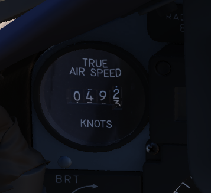
True Airspeed Indicators are provided in both cockpits, and carry a calibrated range from 150 to 1500 knots. While the indicators can read as low as 0 knots, the lack of calibration below the stated range means values less than 150 knots are inaccurate. At high rates of airspeed change, there may be a lag of up to +-10 knots in measurement.
The rear True Airspeed Indicator is removed for DMAS equipment in aircraft so configured; however, TAS is provided as a DMAS function.
Ground Speed Indicator
A ground speed indicator is provided in both cockpits, with a range from 0 to 1999 knots. Ground speed is provided by the navigation computer, with the source dependent on INS function. If the INS online, the ground speed value calculated is based on the provided velocity, and can display correct information as low as 0 knots. When the INS is offline, the air data computer performs a calculation using crew-entered wind information, which can cause errors of up to 150 displaying while the aircraft is on the ground with the parking brake set.
With DMAS installed, the rear ground speed indicator is removed, as GS is a DMAS function.
Accelerometers
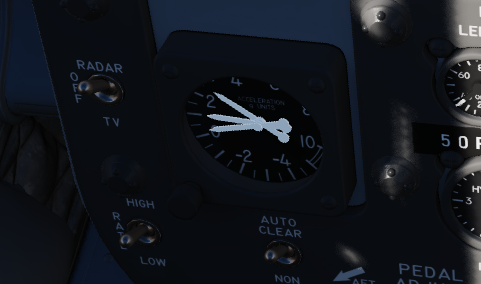
Both cockpits retain accelerometers for monitoring G load; the accelerometers carry 3 needles- one for current G loading, and a positive and negative G loading needle for the highest load G load detected since the accelerometer was reset. To reset the gauge, the PUSH TO SET button will return the recording pointers to positive 1 G.
Airspeed/Mach Indicators

Found in both cockpits is a combination Airspeed/Mach indicator. The indicators provide a fixed airspeed scale at the middle of the indicator, reading values from 80 to 850 knots, and a rotating Mach scale number scale to the outside, with readings from 0.4 to 2.5 Mach. A two position knob offers both an airspeed index with a functional range between 80 and 195 knots, and a Mach index pointer with a range between 225 knots and 850 knots.
Altimeter

Altimeters in both cockpits provide a functional range from 0 to 80,000 feet. To the outside of the indicator is a pointer scale, gradation in 50 foot units with markings every 100 feet (from 1 to 10). Left of center is the counter, increasing and decreasing in value in thousand foot increments on the black pair of rollers, hundred foot increments on the white. Barometric scale adjustment can be performed using a dial. A three position switch provides the RESET function for the altimeter to draw signals from the air data computer for normal operation, and the STBY (standby) option to only use the pneumatic pressure to determine altitude. Standby mode is noted with a red flag in the indicator. In the event of an altimeter or air data computer failure in normal operation, the STBY flag will appear, and cannot be reset. This can also be followed by warnings on the telelight panel.
Magnetic Compass

A magnetic compass is provided in each cockpit for use in the event of a navigation or electrical system failure.
Vertical Velocity Indicators (VVI)

VVI Indicators are provided in both cockpits, and show the rate of climb or descent of the aircraft, calculated via atmospheric pressure change using the static pressure system.
Radar Altimeter

Found in the front cockpit, the Radar Altimeter has a functional range of 0 to 5000 feet above ground level. The radar altimeter functions from 0 to 30 degrees in bank angle, or 0 to 35 degrees angle in pitch. The dial scale reads from 0 to 100 feet, and the system includes a red low altitude warning light that illuminates when the aircraft is detected below a pilot-set altitude.
Activation and setting of the radar altimeter warning height is done with the same knob; turning the knob clockwise initially activates the indicator, removing the displayed OFF flag; continuing to rotate the knob moves the reference marker that will determine the altitude which triggers the low altitude warning. A self-test, initiated by pressing the function control switch, shows 35 +-15 feet. Above 5000 feet or with unreliable signals, the pointer hides behind a mask, showing the OFF flag. The OFF appears also when power is lost- the indicator will then present the last altitude detected above ground level at the time of this occurring.
Turn and Slip Indicators
In the front cockpit, a turn and slip indicator is added to the ADI on the instrument panel; while the needle provides correct direction of turn, it does not provide proper turn rate information. A conventional 4 minute turn and slip indicator is found on the rear cockpit panel.
Rear Cockpit Attitude Indicator
The AHRS provides attitude information to the Attitude Indicator found on the rear cockpit instrument panel regardless of the Reference System Selector Switch position. A trim knob provides the ability to adjust the attitude sphere to reference the aircraft correctly. Should power be disconnected from the indicator or AHRS, the OFF flag will display.
Pitot-Static System
The Pitot-Static system provides impact and static pressure to flight instrumentation, the Air Data Computer, and airspeed-driven switches. To alleviate icing of the pitot head, a Pitot Heat Switch is found in the front cockpit right console.
Air Data Computer System
Using a variety of static, attitude, and environmental inputs, the Air Data Computer (ADC) provides the pneumatic and electrical inputs to the AFCS, Fire Control System, Air Induction System, the INS, the LCOSS, navigational computer, as well as manages the variable bypass bellmouth system for the engines. Flight through weather such as ice or rain can induce errors in the performance of these systems until the condition has cleared, and this should be taken into account.
Static Pressure Compensator
The Static Pressure Compensator (SPC) performs correction of altimeter lag caused by rapid altitude change. The SPC must be reset after engine startup on each flight; this is performed using the CADC switch near the throttles by selecting RESET CORR, then selecting NORM. Should an issue occur during flight causing a STATIC CORR OFF warning, an attempt to reset the SPC can be performed with RESET CORR. Should the STATIC CORR OFF warning fail to clear, care must be taken in all diving maneuvers, as substantial altimeter lag will occur.
ALT ENCODER OUT Light
The Altitude Encoder Unit provides precise (to 100 feet) altitude data to the IFF for Mode C traffic control, as well as performs the correction relative to the pneumatic input at the altimeter. Should the SPC be offline, the ALT ENCODER OUT light will also illuminate to confirm lagged altimeter performance, and potential Mode C issues.
Navigation, Communication, and Identification Systems
Flight Director Group
Accurate course navigation is provided by the Flight Director Group, which includes the Flight Director Computer, the Horizontal Situation Indicator (HIS) along with the Navigation Function Selector Panel in the front cockpit, and the Bearing Distance Heading Indicator (BDHI) together with the Navigation Mode Selector Switch in the rear cockpit.
Navigation Function Selector Panel
Found on the front cockpit instrument panel, the Navigation Function Selector Panel has two knobs- a Bearing/Distance Selector Knob and a Mode Selector Knob.
Bearing Distance Selector Knob
The Bearing Distance Selector Knob sets the bearing pointer and range indication displays on the HSI. Positions are VOR/TAC, TAC, ADF/TAC, and NAV COMP.
In VOR/TAC mode, magnetic and relative bearing to the VOR station and range to the TACAN station are provided on the HSI bearing pointer and range indicator.
With TAC mode, magnetic and relative bearing and range to the selected TACAN station are displayed.
In ADF/TAC mode, magnetic and relative bearing to the selected ADF station and range to the TACAN station are displayed.
And in NAV COMP mode, magnetic and relative bearing and range are provided to the destination set in the navigation computer.
Mode Selector Knob
The Mode Selector Knob controls the remaining informational displays on the HSI, as well as the pitch and bank steering bars on the ADI. The mode selector knob operates independently from the bearing pointer and range indicator, and the selector positions are VOR/ILS, TAC, NAV COMP, and HDG. Navigation modes set by this knob will be indicated by an illuminated word message when the instrument panel lights are on; available mode word messages are TAC (TACAN), NAV (navigation computer), UHF (ADF), MAN (HDG entry), ILS (instrument landing system), and TGT (target). TGT illuminates that the WSO has provided a target entry and pressed TGT on the Cursor Control Panel.
Flight Director Switch
The Flight Director Switch turns ON and OFF the Flight Director Computer pitch and bank angle steering clues, visible on the ADI. Selecting OFF removes these bars from view.
Horizontal Situation Indicator
The Horizontal Situation Indicator displays a top-down plan view of current navigation, with cues provided relative to the selected navigation mode selector position.
In VOR/ILS, the Heading Set Knob is used to enter the desired magnetic heading. The Course Set knob is used to set the VOR radial or inbound localizer. Once set, the Deviation Indicator shows current deviation from the selected course.
TACAN mode presents information relative to the current selected TACAN beacon. To provide full information, the Bearing/Distance Switch should be set to TAC. The course arrow and course selector window are set using the Course Set knob to the desired TACAN course. Once set, the Deviation Indicator and aircraft symbol provide the top down display relative to the set course, with a maximum deviation deflection of 10 degrees. The Heading Set knob is used to set a desired TACAN course for bank steering presentation on the ADI. If the heading marker is not set, bank steering on the ADI will not be correct to intercept the desired course. A To-From indicator displays when the mode selector is in TACAN or VOR/ILS mode when either are tuned and received; once the course is intercepted, the indication references whether the current course is taking the aircraft to or from the tuned station.
NAV COMP mode displays magnetic ground track on the course arrow and the course selector window relative to the current navigation computer fix. The bank steering bar provides steering information to direct an approach to the command heading.
With HDG mode active, the course arrow and deviation are slaved to the lubber line and aircraft magnetic heading. The course selector window displays the current selected magnetic heading, which is adjusted using the Heading Set knob. The given course information is applied for an ADI bank steering command.
Attitude Director Indicator
The ADI provides command steering to intercept selected headings, TACAN stations, tracks, VOR radials, or navigation computer destinations. Bank steering instruction is presented using the bank steering bar, which can reference angles up to 35 degrees. Should a bank angle in excess of 35 degrees be desired, the instructed angle can be disregarded during the turn. When the Heading Set knob has been used to enter the correct target heading, the intercept presentation is accurate within a 60 degree field of a TACAN course, or 90 degrees for a VOR radial. Additionally, a Glideslope Pointer is provided for relative glideslope position indication during an ILS approach.
Upon startup of the ADI, an OFF warning flag will be displayed until the AN/AJB-7 gyro has aligned. This can also appear due to power loss or a signal failure. The flag does not present if a system failure occurs outside of the AN/AJB-7.
Bearing Distance Heading Indicator
The Bearing Distance Heading Indicator (BDHI) displays navigation information using two needles, referred to as the No. 1 and No. 2 pointers, which receive inputs controlled by the WSO Navigation Mode Selector Switch.
When the upper position is selected to TACAN/ADF/UHF, the no. 1 pointer indicates UHF bearing, and the no. 2 pointer indicates the TACAN bearing. If there is no TACAN signal, both pointers indicate the ADF bearing.
With the middle position selected- VOR/TAC, the no. 1 pointer indicates the VOR bearing, the no. 2 pointer indicates the TACAN bearing, and the range indicator provides distance to the TACAN station. In the absence of a TACAN signal, both pointers indicate the VOR station.
In the lower position, NAV COMP, the no. 1 pointer indicates bearing to the navigation computer target coordinates, and the no. 2 pointer indicates magnetic ground track. The range indicator notes distance to the target coordinates.
AN/ASN-63 Inertial Navigation System
The AN/ASN-63 INS provides the F-4E aircrew and integrated weapons delivery system with real time accurate positional, velocity, attitude, and heading information. When the system is aligned to its most precise extent in gyrocompass mode, the INS is accurate to 3 nautical miles per hour of circular error probability (CEP).
Inertial Measurement Platform
The system uses a four gimbal (outer roll, pitch, inner roll, azimuth) inertial navigating platform, with the dual roll gimbals providing redundancy to eliminate a gimbal lock in outer roll/azimuth gimbal alignment.
Installed on the platform are a pair of G-200 two-axis gyros, with the upper gyro axis aligned for spin on the north-south axis while the lower gyro aligns for east-west spin; torque detection in each gyro tracks the perpendicular axes- ergo, the high gimbal detects east/west rotation, while the low gyro detects north/south rotation. In this way, rotation in all three dimensions are represented. The gyros are floated, and proper operation can only take place once the fluid has attained operating temperature (160 degrees F); the system is effectively climate controlled across the altitude operating range of the Phantom. A series of precision magnetic torquers provide localization movement, while acceleration pickoffs function within a separate electromagnetic field perform the actual data capture from the displacements of the gyroscopes.
Along the platform, set orthogonally (at 90 degree respective positions) are a trio of A-200D accelerometers. These accelerators, similarly floated to the gyros, with a similar arrangement of torquers and displacement pickers to provide velocity capture. Increasing the accuracy of these evaluations is the inclusion of a tuning fork, the resonance from which eliminates effectively all static friction in the motion capture assembly.
Navigational Computer and Output Signal Distribution
The respective captured motion signals from the gyroscopes and accelerometers are amplified in the LN-12D navigational computer, which then performs the earth reference integration. The LN-12D compensates for all longitudes and can effectively track as high as 80 degrees latitude, where the mechanical limitations of calculating tangent relative to the equator is too high for the device.
The AN/ASN-63 provides information to other systems in the Phantom from the OSDU, or Output Signal Distribution Unit. The OSDU provides ground speed, north-south and east-west velocity, total velocity, inertially stabilized altitude, climb angle, true inertial heading, ground track, and drift angle. The WRCS receives inertial true heading, ground track, drift correction angle, and drift angle for its ballistics computer. Drift angle is captured for the BDHI, HSI, and FDC. Drift correction angle is also provided to the radar and LCOSS.
Alignment Options
The LN-12 has three modes of alignment on aircraft start: BATH, Heading Memory (HDG MEM), and Gyrocompass alignment. Prior to performing any alignment, STBY Reference System must be selected, the Nav Computer Control Panel should be turned on and its position update switch should be selected to NORMAL. Local magnetic variation should be entered on the variation counter, and the position counter should be set to local latitude and longitude. Doing so will greatly expedite gyrocompass alignment. Further, alignment should not be performed with the wings in their folded position, as the magnetic flux valve that provides compass synchronization wil be 60 degrees outside of normal position.
The INS also includes an in-flight position update option, should the aircrew note gross deviation from known location fixes.
Best Available True Heading
STBY position must be placed momentarity to avoid an INS no-go. Once set to ALIGN, the ALIGN lamp will illuminate steadily after 75 seconds indicating BATH Alignment is ready. Once in BATH, the INS is accurate to roughly 5 and a half nautical miles per hour CEP, although higher inaccuracies can be seen. Once BATH is achieved, NAV mode can be selected and the aircraft flown with the above caveat.
Heading Memory Alignment
This option becomes accessible if the alignment has been previously stored and the aircraft has remained stationary. To access it, select HDG MEM located beneath the red guard on the control panel before transitioning the INS knob from OFF to ALIGN. This alignment method minimizes the alignment time, offering a relative Circular Error Probability (CEP) at the optimal end of BATH (5.5 nautical miles), or even Gyrocompass Alignment (3 nautical miles) if the previous alignment occurred within the last 2 hours.
To access the accelerated HDG MEM alignment mode, the guard must be raised and the switch actuated up, and the INS mode switch placed to ALIGN until the ALIGN lamp starts flashing. Then, the INS can be placed into NAV mode. If time allows, STBY mode can be selected before going to ALIGN to allow proper heating of the gyroscopes (which goes through the illumination/off cycle as above).
Gyrocompass Alignment
Maximum system precision is found by allowing the INS to perform a full Gyrocompassing alignment. This method permits the gyros to find the most accurate true north reference possible, but can entail substantial amounts of time- and even greater time based on inaccurate or missing magnetic variation setting entry prior to powering the INS on. As an example- for a one degree compass heading error, the time to achieve maximum accuracy on the system is approximately five minutes, which attains an accuracy of ±10 minutes of arc alignment, giving the aforementioned 3 nautical miles of deviation per hour. The minimum amount of time to complete a Gyrocompassing alignment once BATH or HDG MEM level alignment is achieved is 50 additional seconds, while a normal alignment takes around 5 minutes. If the aircraft is aligned at 70 degrees of latitude or more, additional time should be expected.
To conduct Gyrocompass Alignment, it's necessary to keep the INS in STBY mode until the HEAT light turns off. Moving to ALIGN while the lights are still on prevents achieving full Gyrocompass Alignment, resulting in only the BATH process being performed. The duration of the heating phase depends on the ambient temperature. The system heats up at a rate of approximately 20°F per minute, reaching an operational temperature of 160°F. Once the system reaches its operating temperature, an additional 50 seconds are required until the HEAT light extinguishes. After transitioning to ALIGN, the light will illuminate steadily after 75 seconds, signaling the completion of the initial BATH alignment, initiating the gyrocompassing process. Once Gyrocompass alignment concludes, the ALIGN indicator will flash, indicating the system has achieved full alignment. While gyrocompassing (when the align light is steadily lit), NAV mode can be entered at any time, though optimal accuracy will only be attained when the ALIGN indicator flashes.
Any other available time prior to moving the aircraft can be spent in ALIGN to further increase system accuracy.
In-Flight Emergency Alignment
In the event of a significant attitude error or failure of the STBY Attitude Reference, an emergency in-flight alignment of the INS can be executed. The aircraft must maintain straight and level flight, with the Reference System Selector Knob set to STBY. Once in this configuration, the INS Mode Knob should be switched to OFF, then to STBY for a duration of 15 seconds. Subsequently, after the 15-second interval, return the Mode to NAV, and resume straight and level flight. The process of resetting the Reference Selector to PRIM can be performed approximately after 40 seconds, although the precise alignment time is not specified.
It's important to note that the accuracy of the attitude in this alignment is contingent upon how steadily the aircraft was flown during the alignment period and subsequent alignments may be required. Following this emergency alignment, only attitude information will be available. Velocities, position, and displays on the navigation computer will be inaccurate and cannot be utilized for navigation purposes.
Navigation Computer
The ASN-46A Nav Computer is used for general navigation and tactical route planning. The system contains both a great circle and rhumb line computational capabilities, with the former being used for larger distance bearing calculations (over 120 miles), and the latter for closer range accuracy. The Nav Computer functions solely using aircraft-based instruments, ergo the INS, Air Data Computer, and the magnetic compass; it can receive no information from the ILS, VOR, or TACAN systems.
The system can maintain relative bearing and distance from up to two specific waypoints at a time (identified as Target 1 and Target 2, with Target 2 being held in memory), and this information is shown on the BDHI and ADI in real time. For data to appear on the BDHI, the Navigation Selection Switch must be positioned in NAV COMP.
The computer also provides confirmation of current LN-12 precision, using a pair of lights marked LAT and LONG, as well as the Variation Sync Meter. When these lamps are off, the current displayed position coordinates are within 1 1/2 arc minutes precision. Magnetic variation detected by way of the INS gyroscopes is compared against the manual performed prior to INS powerup via the Magnetic Variation Control knob, and displayed on the Variation Sync Meter. This deviation can be corrected on the Magnetic Variation Control Knob to bring the sync to center. Although the magnetic variation control knob has no effect on the meter in air data mode, positive correction prior to INS loss increases the air data mode precision.
The Nav Computer can function in either Inertial or Air Data mode. Both modes provide the same outputs but the inertial mode (default) is more accurate.
In the event of an INS failure, the Nav Computer reverts to Air Data mode. In Air Data mode. the rear pilot must continually monitor and adjust true wind direction and speed, magnetic variation, as the only dead reckoning inputs available to the computer is true airspeed (from the air data computer) and magnetic heading from the compass system. When the system reverts to Air Data mode, the AIR DATA MODE lamp will illuminate.
During startup, the Position Control Knobs, Wind Control Knobs, and Magnetic Variation Control Knob are used to enter known latitude, longitude, wind direction and speed, and magnetic variation for the location of the aircraft at that time.
Waypoint Entry
Entering waypoints and target information is performed using the Function Selector Knob and the two Target Control Knobs, one for latitude, and the other longitude.
| Name | Description |
|---|---|
| OFF | System off. |
| STBY | System powered, but no latitude or longitude reference performed versus the values in the Target windows. |
| TARGET 1 | Provides readouts of range and bearing on the currently entered Target window values. |
| TARGET 2 | Selects range and bearing information from previously stored Target window values. |
| RESET | Deletes any previously saved Target window values, stores currently entered Target window values. |
Because of the Target 2 memory function, in practice the aircrew has some flexibility in process depending on the demands of the mission. As an example, should the Phantom crew be tasked with a CAP or defensive role relative to a known position (ie, bullseye), the coordinates of that location can be loaded into the Target Control values, the Function Selector placed into RESET, and then returned to Target 2. Any change from Target 2 to Target 1 or STBY, then back to Target 2 will maintain said location value, easily accessed.
The other common technique was "leapfrogging":
-
On startup, the second waypoint would be stored in Target 2 memory (entry on the Target Control values, Function to RESET, then back to Target 2).
-
Once the second waypoint location was stored, the rear pilot would then select Target 1 for live entry of the first in-flight waypoint on the Target Control values.
-
During flyout to the first waypoint, upon passing it over, Target 2 would be selected as the destination, and the next waypoint (3) would be entered on the Target Control Values.
-
Upon flyover of waypoint 2, the Function Knob would be positioned to RESET, then back to Target 2- now pulling the waypoint 3 values from the Target Control values.
This process would be continued over the course of the flight, and allow the rear pilot the ability to immediately switch to Target 1 for a quick check of relative position to another location of interest if required, or an in-flight detour (such as to a tanker track), then return back to the next stored waypoint for navigation.
In Flight Updating
In flight updating with the Nav Computer is performed using direct overflight of known target points, using a visual or radar fix, over a TACAN station, or via instruction from GCI.
Inertial Mode Update
With the Nav Computer in Inertial mode, the aircraft is flown straight and level at a known fix location.
-
On arrival, the Position Update Switch is placed in the SET position. Doing so disengages the longitude and latitude position counters.
-
The position longitude and latitude counters are set using their respective knobs for the know location.
-
Prior to arrival at the fix point, the Position Update Switch is placed and held in the FIX position.
-
Upon direct flyover of the fix point, the Position Update Switch is released, allowing it to fall back into NORMAL.
The correction rate of the Nav Computer is roughly 3 minutes latitude or longitude per second, and the Update Switch must be held in FIX long enough to account for the largest value. As an example, if the deviation is 9 minutes in latitude and 4 in longitude, the FIX position must be held at least 3 seconds prior to the aircraft directly passing the fix location. Further, the switch actuation from SET to FIX must be smooth and direct, as there is a half second time delay in the computer in the pass-through of NORMAL.
Air Data Mode Update
In Air Data Mode, the Nav Computer can be updated as in the Inertial Mode using the SET/FIX method, or via direct rotation of the latitude and longitude position knobs. Using the latter method requires the Function Select Knob to be placed in STBY, TARGET 1, or TARGET 2. The SET/FIX method is preferred, as doing so allows for instant update upon fix position flyover and release of the switch.
TACAN (Tactical Air Navigation) System
Bearing and range information to transmitting stations is provided by the TACAN system. The TACAN system can receive information from ground stations as far as 390 miles, and air to air TACAN equipped aircraft to 200 miles. The TACAN system provides the identity of the transmitting station and the dependability of the signal received. Course deviation is calculated and displayed on navigation systems set in TACAN mode. If a TACAN signal is invalid, a warning is displayed. In the event of a signal loss, the system continues providing range tracking for 15 seconds, and bearing tracking for 3 seconds. The system will perform a self-test after a signal loss to confirm function on the control panel. Two TACAN antennas are provided, and signal switching is automatic to maintain the best signal.
TACAN Controls
TACAN controls are found on the navigation control panel in each cockpit.
Navigation Command Button and Indicator
The NAV CMD button and indicator performs command authority switch between the two cockpits, and are found on the upper right corner of the Communication Control Panel. A green light illuminates to the left of the button in the cockpit that has control of the navigation system.
Mode Selector Knob, BRG/DIST Selector Switch, and Navigation Function Selector
As detailed in the Flight Director Group section, the Mode Selector, BRG/DIST Selector, and Navigation Function Selector determine the presentation of TACAN information on the HSI, the ADI, and the BDHI.
Navigation Channel Control Knobs
On the TACAN Control Panel beneath the channel window, a pair of knobs set the desired TACAN channel. The left knob controls the tens and hundred digits of the channel. The right knob selects the units of the operating channel, and the outer knob sets the X or Y channel; both X and Y have 126 available channels. While the indicator can show 127, 128, and 129, these values are nonfunctional.
TACAN Function Selector Knob
OFF: the TACAN system is deenergized
REC: only the receiver is energized, and the system receives and decodes bearing signals from the TACAN station and provides bearing information for the HSI, BDHI, and ADI displays.
T/R: the TACAN generates distance information along with bearing; the distance is then added to the HSI and BDHI, provided in nautical miles.
A/A REC: the TACAN receives and displays bearing information for the HSI, BDHI, and ADI steering display from an aircraft providing a TACAN beacon signal. The channel selected must be 63 channels above or below the transmitting aircraft beacon, on the same X or Y channel range; for example, a tanker transmitting on 83X will be received on 20X.
A/A TR: the TACAN interrogates the equipped aircraft beacon to add range information to the HSI and BDHI. The channel selection method remains the same as A/A REC.
Navigation Volume Control Knob
The NAV VOL knob controls the headset audible volume of the received TACAN station.
VOR/ILS System
The VHF omnidirectional range instrument landing system, or VOR/ILS, provides precise bearing and course deviation information from a transmitting ground station. Additionally, the aircraft is able to use precision landing approach and descent capabilities at localizer equipped fields. Guidance information from the VOR/ILS system is provided to the pilot on the BDHI, ADI, and HSI. VOR/ILS function is enabled on these displays using the appropriate Flight Director Group control selections on the Bearing/Distance Selector switch, the Navigation Mode Selector switch, and the Flight Director Switch.
VOR/ILS Control Panel
The control panel for the VOR/ILS is found on the front cockpit left console; the panel includes a frequency indicator, two frequency select knobs, a volume control (marked NAV VOL), a marker beacon volume control knob (MB VOL), and a VOL/MRK TEST pushbutton.
VOR/ILS Frequency Selector Knobs
The Frequency Selector Knobs is a dual actuation concentric knob; the outer ring selects the number to the left of the decimal point on the frequency indicator, whereas the inner knob selects numbers to the right.
NAV VOL Knob and MB VOL Knob
The NAV VOL knob both activates the VOL/ILS system, as well as controls the audible volume for the front cockpit. The knob is turned clockwise to power the system on, then further to increase the volume. The MB VOL knob adjusts the volume of the marker beacon audio in the front cockpit.
WSO Course Indicator
In the rear cockpit is the Course Indicator, on the main instrument panel; During an ILS approach, the indicator displays relative heading for the course set in the course selector window, as well as horizontal and vertical position relative to the ILS localizer and glide slope entered by the pilot. In this way, the WSO can assist the pilot in achieving and maintaining glide slope. The controls for the indicator are purely for the WSOs reference, and do not interact with the Flight Director Group displays in the front cockpit.
Components of the course indicator are a TO-FROM indicator (does not function with ILS), a course deviation scale, a glide slope deviation scale, a COURSE selector window, a course SET knob, a heading pointer and heading scale, a marker beacon light, a GLIDE SLOPE indicator, a course deviation indicator (LOC OR RANGE), and course and glide slope OFF warning flags.
Once the pilot has selected an ILS frequency, the WSO must set a course inbound heading in the selector window using the SET knob.
Used only with the ILS system (doesn't function with VOR).
Intercom System
The Intercom System provides communication between the pilot, WSO, and ground crew, and functions with external power, or the aircraft battery once either Engine Master Switch is in the ON position.
Intercom Control Panel
Each cockpit has an Intercom Control Panel, providing a volume control knob, an amplifier selector, and a function selector switch.
Volume Control Knob
The Intercom Volume Control knob sets relative volume level for the given cockpit; increasing volume is performed by turning the knob clockwise. The Intercom Volume Control does not affect any other cockpit audio signal.
Function Selector Switch
The function selector offers three options: COLD MIC, HOT MIC (enabling automatic intercom operation), and RADIO OVERRIDE. While RADIO OVERRIDE operates similarly to HOT MIC, it also attenuates all sounds except for crew communication, the pullup tone from the ARBCS, and the Shrike aural tone. For ground crew transmission to be enabled, the WSOs switch must be set to HOT MIC.
Amplifier Select Knob
The three position Amplifier Select Knob determines which amplification channel is used: B/U for the backup, NORM for the normal amplifier, and EMER for a parallel function, should both amplifiers in a cockpit fail. In EMER mode, only audio from the other cockpit would be heard, and the volume control of all sounds would be managed by that cockpit.
Intercom Microphone Switch
The microphone switch for the Intercom System is the aft position on the inboard throttle grip in both cockpits. When using the intercom, all audio sans the pullup tone, stall warning, voice warning, and ECM are reduced (same as RADIO OVERRIDE).
UHF Radio
The UHF Radio provides voice and Automatic Direction Finding (ADF) capabilities to the F-4E. The radio can receive and transmit on 3500 manually selected frequencies, 18 preset channels, or on the standard 243.00 MHz guard channel. The aux receiver covers an additional 20 preset channels or guard. Two blade antennas, one upper and one lower, as well as an ADF antenna, are provided. Once the antenna mode is set for the primary channel, the aux receives from the other antenna.
Comm Control Panel
Two Comm Control Panels are installed, found on the right console in the front cockpit, and on the left console in the rear cockpit. These provide management of the radio in either seat, with selectable priority.
Comm Command Button and Light
Control authority of the UHF radio is set by the COMM CMD button. A green light illuminates in the cockpit with control next to the button. Either cockpit can take control, or if already in control, press the button to provide control of the radio to the other seat.
UHF Volume Control Thumbwheel
Sets the listenable volume for the UHF radio for the given crew-member.
KY-28 Speech Security Unit
Speech Security Unit KY-28
The UHF communication system is capable of providing either conventional or crypto voice transmission and reception. Both UHF and intercom systems can be used in combination with the KY-28 Speech Security Unit, if so desired in a tactical or hostile environment. The KY-28 can either cipher outgoing voice transmissions or decipher received voice transmissions, however these functions cannot be performed simultaneously. The crew can choose between plain or cipher mode of operation. In the cipher mode operation the KY-28 converts voice inputs through the microphone into crypto transmissions and deciphers crypto replies that are being received to the crews headsets. In the plain mode operation the UHF functions as a conventional voice transceiver.
KY-28 Controls and Indicators

The KY-28 is controlled by the KY-28 control panel and respectively the conventional UHF or Intercom controls. Both front and rear cockpit instrument panels display mode lights for either mode. If the mode light P is illuminated the KY-28 and UHF/Intercom is operated in plain mode. If the mode light C is illuminated the KY-28 and UHF/intercom is operated in the cipher mode.
KY-28 Control Panel

The KY-28 control panel is in the rear cockpit. It has a power knob, a mode switch and a code zeroize button. The power knob provides power to the KY-28 and can be set to either OFF, ON or RLY (relay). The KY-28 is not powered in the OFF position. It is powered in the ON and RLY positions. If a direct communication between KY units is desired, the ON position is to be selected. RLY would provide the ability to use the KY-28 as a retransmission facility, which is not modeled in DCS. The mode switch can be set to either P (plain) or C (cipher) operating modes. To change modes the switch has to be pulled outwards. If the KY-28 is powered and the mode switch is set to the C position, the UHF transmitter is automatically selected for front cockpit transmissions. Pressing the zeroize button neutralizes the preset code in the KY-28. The zeroize button is guarded and should only be used in emergencies or after aircraft shutdown if required. As the code can only be set on the ground, pressing the zeroize button during flight makes the cipher mode inoperable for the crew for the remainder of the flight.
Note: To permit conventional UHF communications the mode must be set to P (plain) even if the KY-28 power knob is in the OFF position. If the mode is set to C (cipher), conventional UHF communication is inhibited in both the front and rear cockpit. An exception to this is transmission and reception on guard or aux receivers, as these are not affected by the cipher mode.
KY-28 Modes of Operation
All transmitted and received signals are routed through the KY-28 unit. When the KY-28 mode is set to P (plain), the UHF transceiver operates in the conventional voice manner, whether the KY-28 is powered or not.
To operate the UHF transceiver in the KY-28s C (cipher) mode, the KY-28 has to be powered. When operating in the cipher mode, the KY-28 unit functions in either standby, receive, or transmit.
All KY-28 units remain in the STANDBY condition until either the microphone button is actuated or a sync preamble is received. Once transmission or reception of the crypto message has been completed the KY-28 automatically reverts to the standby condition. While the KY-28 is in the standby condition the radio equipment also functions as a traditional receiver as all incoming non-crypto transmissions are passed directly to the headsets.
The unit switches to the cipher RECEIVE condition whenever a sync preamble is received. The sync preamble is generated by other KY-8, KY-28 or KY-38 units when the transmitting stations operator actuates the microphone button. The sync preamble ensures that all units in the network are in the cipher receive condition. The enciphered message is received immediately after the sync preamble signal and the message is decoded by the KY-28 and passed to the aircrew headsets in the form of plain language.
When the UHF microphone button is set to the UHF position, the KY-28 switches to the TRANSMIT condition. The sync preamble signal is transmitted to all receiving KY stations to switch to the cipher receive condition. After actuating the microphone button, a brief tone is heard in the aircrew headsets. The tone signal indicates that the sync preamble signal has been completed and transmitted, after which the KY-28 is ready to transmit the crews voice input. When the mic button is released again, the KY-28 reverts to the standby condition. The WSO must select UHF communications with the radio selector switch to transmit ciphered messages. The UHF transmitter is automatically selected for front cockpit transmissions if the KY-28 is operated in mode C.
Note: With the C (cipher) mode selected, the transmit condition overrides the cipher receive condition. Hence during cipher receive operation the UHF microphone button should not be actuated until the incoming message has been completed.
KY-28 Operation
Prelaunch
- Before applying power to the aircraft the KY-28 power knob should be in the OFF position and the mode switch set to P (plain).
- Determine that a proper code has been set by personnel qualified in voice security equipment. In DCS and in combination with SRS (Simple Radio) this is done through the ground crew communication menu in the DCS communications menu.
- UHF radio - ON.
- Mode switch - P.
- Power knob - ON.
- If a ground test of equipment is desired, establish two-way, plain-text radio communications on the plain-voice radio with a suitable remote station and request an equipment check. (In DCS another player is needed)
- Mode switch - C.
- The KY-28 will perform an automatic alarm check when the mode switch is set to C and the power knob is set to On. The check will continue for about 2 seconds after power is applied. During this time a steady, unbroken 1200 Hz tone is heard in the headsets. Upon successful completion of the check, the 1200 Hz tone is interrupted at a 2.3 Hz rate.
- Momentarily position the microphone button to UHF to clear the interrupted tone. When the microphone button is released, the KY-28 reverts to the standby condition and is ready for either transmission or reception. If the until fails to pass the alarm check, the steady 1200 Hz tone continues and further cipher operation is inhibited.
- Note: If the KY-28 fails the alarm check, the power knob must be set to OFF and the mode switch to P (plain) to enable conventional UHF communications.
- To transmit ciphered messages, position the microphone button to UHF and wait until a momentary tone is heard before voice input. With the power knob set to ON, the momentary tone is delayed 0.5 seconds after pressing the microphone button. During this time an encryption check is performed and the sync preamble is transmitted to receiving stations. If the encryption check fails, a 1200 Hz tone interrupted at a 2.3 Hz rate is presented in the headsets and cipher transmission is not possible. If the encryption check succeeds, a momentary tone is heard in the headsets.
- After the momentary tone is heard, establish two-way cipher radio communications with a cooperating station and check for readability and signal strength and/or transmit your message. Upon releasing the microphone button the KY-28 will return into the standby condition. Simultaneous transmission by two or more stations on the same frequency is not possible and may result in garbled messages or loss of synchronization.
- Resume normal, non-crypto communications if desired at any time by setting the mode switch to P (plain) again.
- Note: The above procedures may be used to perform an in-flight check of the equipment.
- Postlaunch
- The speech security equipment shall be operated as briefed.
- Warning: If ZEROIZE is pressed during flight, ciphered communication is not possible. The code can only be reset (or changed) through the ground crew communications menu after landing.
- After Landing
- Zeroize as briefed.
- Power switch - OFF.
Lighting, Emergency, and Utility Systems
Lighting Equipment
Exterior Lighting

Exterior lights on the F-4E include position lights found on the wings and tail, join-up lights on the wings, fuselage lights, the anti collision light, and the inflight refueling receptacle light; the control for these are found on the right console. Additional in-flight lighting is provided by the formation lights, which have a separate set of controls above the right console. Further lighting is available for landing and taxi when the gear are lowered, and the controls for these are found on the left sub-panel.
Position and Join-Up Lights
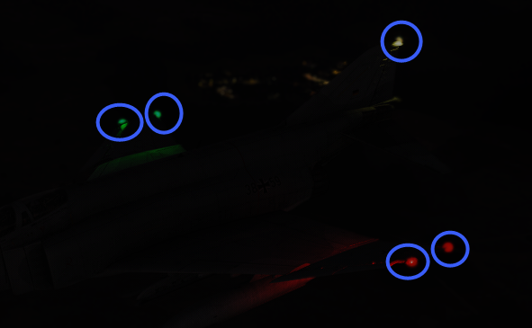
The wing and join-up lights are controlled by a single switch, with options for OFF, DIM, and BRT. These lights do not have a flash function. The tail light is controlled by the Flasher Switch in STEADY or FLASH position.
Anti-Collision and Fuselage Lights


Three white anti-collision lights are found behind the rear cockpit canopy, and one below each of the engine intakes.

A red anti-collision light is found on the vertical stabilizer.
These are all controlled by the three position FUS switch, which can be set to OFF, DIM, and BRT. The red light on the stabilizer only illuminates when this switch is selected to BRT. The fuselage lights only function with the Flasher Switch in STEADY or FLASH, and cycle when in the latter setting.
Landing and Taxi Lights
The landing and taxi lights are found on the nose gear door, and only illuminate when the gear are in the down position.
IFR Receptacle Lights
To assist operators with boom alignment, lights illuminating the IFR receptacle will power on when it is raised by placing the Air Refuel Switch into EXTEND.
Formation Lights

Electroluminescent formation lighting is found along the fuselage, wing tips, and vertical stabilizer. These are activated using the control panel above the right console, and have options for ON, OFF, and MOM (for momentary).
Interior Lighting
Lighting for instruments and controls, as well as a white utility lamp and red floodlights are found in both cockpits. Barring the utility lamp and floodlight controls (which are found on their respective lamps), all cockpit lighting controls are found on the Flight Instrument Lights Control panel in each cockpit. The sole difference between the two control panels is the intensity control for the Warning Control knob in the front cockpit, which controls brightness for all warning lights in both cockpits.
Emergency Systems
Warning and Indicator Lights
Telelight Panel
The majority of cockpit warning lamps are found on the telelight panel on the right sub-panel in the front cockpit. A list of them follows:
Master Caution
Found in the front cockpit, the MASTER CAUTION provides the pilot with an up-front warning of potential hazard to the aircraft. The MASTER CAUTION illuminates concurrently with most warning lamps on the telelight panel and the generator indicators; warnings that do not set off MASTER CAUTION are noted in the Telelight Panel list.
MASTER CAUTION can be deactivated by the pilot pressing the reset button on the right console. However, it is important to note that pressing MASTER CAUTION does not clear a warning on the telelight panel; instead, the warning will remain until rectified. Should a second event occur in a system already giving a telelight warning, MASTER CAUTION will not illuminate a second time.
Warning Light Test Circuit
Confirmation of bulb function can be performed using the Warning Test Light Circuit found on the interior light control panel in both cockpits. These do not perform a function text for the individual warning systems, only confirm that the lights will illuminate.
Engine Fire and Overheat Detector System
On the right upper instrument panel in the front cockpit are four warning lamps- two FIRE and two OVRHEAT lights, one for each side. Should a fire be detected in an engine compartment, the applicable FIRE lap will illuminate. Overheat detectors are mounted at the rear of the fuselage adjacent to the engine nozzles, and illuminate the respective OVRHEAT lamp should temperatures become dangerous to the aircraft.
Fire Test Button
When pressed, this button tests for functionality of the FIRE and OVRHT lamps. Can also be used in conjunction with the Warning Lights Test switch to confirm detection and continuity performance of the fire and overhead warning systems. Holding the Warning Lights Test switch in the WARN TEST position, then simultaneously pressing and releasing the Fire Test Button performs the test. Proper system function is confirmed with the four FIRE and OVRHT lamps off while the Fire Test Button is pressed, then illuminating when it is released.
Eject Light
In the event of loss of intercom power, the pilot can warn the WSO to prepare for ejection by pressing the EJECT switch found on the left canopy sill forward of the flap switch. This illuminates a pair of warning lamps found on the rear cockpit indicator panel.
Ejection Seats
The Phantom II uses the Martin Baker Mk. H-7 ejection seat in both positions for safe aircrew extraction in the event of airframe loss. Triggering ejection using the face curtain or lower ejection handles fires the seat mounted initiator that jettisons the canopy. Once the canopy is clear of the airframe, the ejection gun primary charge fires, unlatching the seat from the cockpit and initiating seat climbout. As the seat rises, restraints on the legs pull them back for clearance and the drogue timer is set. At the appropriate height, a lanyard attaching the rocket motor initiator to the airframe trips the firing pin for the main rocket engine to clear the aircraft. The previously set drogue gun fires at this time, deploying a pair of small chutes to stabilize the seat in attitude and initiate deceleration.
Once the seat has reached a pre-set barometric altitude between 11,500 and 14,500 feet, or momentarily after stabilization if lower, scissor mechanisms release the crew-member with the survival kit-containing seat pan from the ejection frame and deploys the main chute. In the event of ejection below the barostat altitude, the WSO chute is fully deployed at 5 seconds after ejection initiation, and the pilot one second later.
Command Selector Valve Handle
To the left and above the rear cockpit instrument handle is the Command Selector Valve Handle. This handle determines the sequence by an ejection initiated from the rear seat- both seats, or the rear seat only. The handle is marked PLT EJECT PULL TURN. When the handle is oriented vertically, single seat ejection is selected; to set dual seat ejection, the handle is rotated clockwise to the horizontal.
All ejections initiated from the front seat are dual ejections.
Jettison System
The majority of stores carried by the F-4 can be jettisoned from the aircraft while in flight and with the landing gear stowed and doors closed. Jettison does not remove pylons, and the AIM-9 Sidewinder is non-jettisonable.
External Stores Emergency Release Button
Found on the front left cockpit sub-panel, the External Stores Emergency Release, also known as the panic button, will release all air to ground munitions, external tanks, and any pods subject to jettison. Sparrow and Sidewinder missiles, along with all pylons, will remain in place. Pushing the button will show the yellow paint inside its recess to confirm its actuation. Performing the actuation disengages external fuel tank transfer automatically, permitting proper flow of internal wing tanks without further pilot action. The button is active so long as the aircraft gear is up, or, in the event of a forward gear handle failure, so long as the rear gear handle remains IN, and weight is off wheels.
Selective Jettison
Wing and centerline stores can be jettisoned independently using the Jettison Knob in the STORES position, selecting the desired Station Select Buttons to release, and pressing PUSH TO JET. Any pylon or missile launcher at the station will remain in place, but stores- including MERs and TERs, will be released.
AIM-7 Jettison
AIM-7 Sparrow missiles are released individually using the L/R FWD or L/R AFT positions on the Jettison Knob, then pressing PUSH TO JETT.
AGM-65 Jettison
To release AGM-65 missiles, choose TV or ARM on the Weapon Select Knob, press the desired Station Select Button(s), select L WING or R WING for the Jettison Knob, and press PUSH TO JETT. One missile is released per press; once desired rounds are removed from one wing, select the other wing with the Jettison Knob and repeat the PUSH TO JETT cycle.
Oxygen System
Aircrew breathing oxygen is provided with a 10-liter liquid oxygen bottle. A regulator panel is found on the left side in each cockpit- on the console in the front cockpit, and the left sub-panel in the rear. Flow is initiated in each cockpit using the Supply Lever found on the regulator panel. Oxygen flow is confirmed using the Flow Indicator window, which alternates from black to white for each breath. Supply pressure and remaining volume is confirmed using the Oxygen Pressure and Oxygen Quantity gauges found on both regulator panels.
Canopies
The canopies are controlled independently between the two cockpits; handles for standard opening and closing are found on the right side of each cockpit, whereas the yellow and black emergency jettison handle is found on the left in the same relative position. To open normally, the right side handle is pulled to the aft position; closing is performed by pushing it forward. Canopy jettison is initiated by pulling the emergency handle aft.
Air Refueling System
For air to air refueling, the F-4E uses a receptacle system compatible with high pressure USAF-style boom refueling. With this system, fuel can be delivered to the Phantom at a rate of up to 3900 lbs per minute. Fuel received is delivered into fuselage cell 2, then equalized through the rest of the aircraft cells, wing tanks, and, if installed and selected, external tanks.
Air Refuel Switch
Preparation for air refueling is performed by toggling the Air Refuel Switch to EXTEND; doing so extends the receptacle, illuminates the receptacle visual lamps, depressurizes the fuel cells, activates the transfer pumps to redistribute received fuel for CG maintenance, and activates the air refuel READY lamp. RETRACT is used to lower the receptacle and return pressurization and normal function to the tanks.
If, during AAR, the boom disconnects and the DISENGAGED light illuminates, this switch has to be flipped to RETRACT and back to EXTEND to reset the system and allow the boom to connect again.
Refuel Selection Switch
The two-position Refuel Selection Switch provides options for two modes of refueling: internal fuselage and internal wing tanks (INT ONLY), and ALL TANKS, used to include external tanks in the refueling operation.
Ready Light
With the receptacle extended and tanks depressurized, the READY lamp illuminates to notify the pilot refueling can begin. The lamp will turn off when the boom is connected to the receptacle, or the receptacle is lowered by the RETRACT command on the Air Refuel Switch.
Disengaged Light
Should the boom separate from the receptacle, the DISENGAGED lamp will illuminate. In the event of a DISENGAGED signal, the system must be reset to continue refueling.
Air Refueling Release Button
On the front seat control stick is the Air Refueling Release Button. Its primary purpose is to release the receptacle from the boom in the event of a manual refueling cycle (one in which the boom operator cannot force a disconnect remotely), or perform a disengagement on demand based on flight conditions or emergency situation. Pressing the ARRB will disengage the boom, and illuminate the DISENGAGED lamp.
AIR REFUEL RECPT Circuit Breaker
In the event of a DISENGAGED situation during air refueling, the system is reset using the AIR REFUEL RECPT circuit breaker, found on the No 2 circuit breaker panel in the rear cockpit- right side, fourth column, top breaker.
External Tanks Full Lights

Three indicators- L.H. FULL, CTR. FULL, and R.H. FULL (Left Hand, Center, Right Hand) lamps provide confirmation that the external tanks have been filled during the air refueling process. The lamps will remain lit until the air refueling receptacle retracted.
Windshield Rain Removal
To clear precipitation, placing the Rain Removal Switch to ON will direct bleed air from the air conditioning system to an external vent below the windshield, breaking up rain water into smaller drops and blowing them off of the windshield. The system does increase the temperature of the windscreen, and may cause a WINDSHIELD TEMP HI lamp along with the MASTER CAUTION to illuminate. In this situation, the temperature is nearing that of optical distortion, and must be set to OFF immediately.
Due to high Mach frictional heating of the windscreen, the WINDSHIELD TEMP HI lamp can also illuminate with the system off; in that event, the warning can be disregarded.
Weapons and Employment Systems
Multiple Weapons System
The Multiple Weapons System is designed to provide a single point of management for all stores deliverable by the F-4 with regards to arming, pylon activation, delivery mode, and selective jettison. While specific weapons may have additional controls elsewhere in the cockpit on a case by case basis, all of the noted functions are driven by this panel on the left forward console in the front cockpit.
Nose/Tail ARM Switch
Beginning from the top of the panel, the four way Nose/Tail ARM switch selects the solenoids for arming wire capture on MERs and TERs, which then arm the fuzes at the point of release. Additionally, the switch position can also dictate in-flight high/low drag release mode for retarded bombs such as the Mk 82 Snakeye.
| Name | Description |
|---|---|
| SAFE | No arming solenoids activate; bombs release without fuzing enabled. |
| NOSE | Forward and center position solenoids activate to hold arming lanyards. |
| TAIL | Aft position solenoids activate to hold arming lanyards. |
| NOSE/TAIL | Forward, center, and aft position solenoids all activate to hold arming lanyards. |
MER-10 and TER-9 racks include an automatic stepper mode function to automatically bypass stations that have already released munitions. To set this function, when the BOMBS mode of the Weapon Select Knob is chosen, the Nose/Tail switch must be in the NOSE or the NOSE & TAIL position for release signals to be delivered through installed MERs and TERs and bypass empty positions; if the system is set in TAIL, an additional release pulse(s) must be applied using the bomb switch to cycle through the empty stations. Usage of the MER-10A and TER-9A circumvent this requirement.
RKTS and DISP bypass empty stations automatically.
Station Select Buttons
Mode Selection - Delivery Mode Knob
Release mode is set using the Delivery Mode Knob. Values to the left of OFF employ the AN/AJB-7 Attitude Reference and Combing Computer Set (ARBCS), whereas values to the right of DIRECT employ the Weapon Release Computer Set (WRCS). DIRECT is the manual release mode. TGT FIND functions as a navigational mode, and cannot provide a weapon release signal to the fire control, thus can be considered in practice a "safe" position.
The values, clockwise from the left, are as follows:
| Name | Description | System |
|---|---|---|
| INST O/S | Instantaneous Over the Shoulder | ARBCS |
| LOFT | Loft | ARBCS |
| O/S | (Timed) Over the Shoulder | ARBCS |
| T LAD | Timed LADD (Low Angle Drogue Delivery) | ARBCS |
| TL | Timed Level | ARBCS |
| OFF | Off | |
| DIRECT | Manual | |
| TGT FIND | Target Find (Navigation only) | WRCS |
| DT | Dive Toss | WRCS |
| DL | Dive Laydown | WRCS |
| L | Laydown | WRCS |
| OFFSET | Offset Bomb | WRCS |
| AGM-45 | AGM-45 Delivery | WRCS |
Weapon Selector Knob
The Weapon Selector Knob is used to designate the type of weapon to be used
| Name | Description |
|---|---|
| RKTS & DISP | Rockets and dispensers. Arms AWRU release circuitry. |
| ARM | AGM-45 Shrike |
| TV | AGM-65 Maverick and other EO guided weapons. |
| C | Open/unused. May be utilized as an OFF selection. |
| B | Same function as AIR-TO-AIR button in rear cockpit. |
| A | Munitions with internally-set intervalometers (CBUs or spray containers). |
| AGM 12 | AGM-12 Bullpup. |
| BOMBS | Bombs. Arms AWRU release circuitry. |
Centerline Tank Aboard Light
The forward AIM-7 missiles can be inhibited from launch under certain centerline conditions due to possible separation issues or chance of igniting the contents of the centerline position. The CL tank light will illuminate if such a possible condition exists. The conditions that can cause this are as follows:
-
Fuel Tank or MER; the forward Sparrows cannot be launched. The CL tank light will shut off if the tank or MER is jettisoned, allowing launch or jettison.
-
BRU-5/A with single bomb; the CL tank light will illuminate. Forward position Sparrows can be launched or jettisoned, however, attention should be paid to eliminate lateral roll movements until the launched weapon is clear.
-
Aero-27/A with Centerline Arming Unit. The CL tank light will illuminate, however the forward position AIM-7s cannot be jettisoned or released until this is removed post-flight.
Interlock Switch
The fire control system provides an inhibitor option for AIM-7 launches to confirm valid parameters are met, and is accessed with the INTLK switch. With IN selected, the missile will not release upon trigger down should any of the following not be the case:
- The IN RANGE lamp illuminated
- The target aim dot within the ASE (Allowable Steering Error) circle
- The radar knob is not in VI mode
With the INTLK switch in OUT, the AIM-7 can be launched at any time, no matter the condition of the current parameters against the target.
The INTLK switch provides no function for AIM-9 launch.
Aircraft Weapons Release Unit (AWRU)
Used in the BOMBS and RKTS & DISP weapon modes, the AWRU provides interval and quantity controls for munition delivery. The AWRU has both a manual and automatic mode, and the resulting function is accessed with the appropriate settings.
The Interval Knob contains 14 values, providing base interval timing of release pulses while the bomb release button is held from 1/20th of a second (.05) to 1 second. This value can have a 10x multiplier applied to it using the INTRVL Switch. In the NORM mode of the INTRVL switch, the release will apply as on the Interval Knob, whereas when selected to x10, the 10x multiplier will apply- for example, 1 second in NORM would become an interval of 10 seconds in x10 mode.
The Quantity Knob sets the total number of munitions dropped during a bomb release hold, and applies the manual or automatic release functions based on the value selected.
Single-Manual: 1
In the 1 position, the AWRU is placed into manual mode. One munition will be dropped on each bomb release press, with releases across multiple selected stations dropping in a left-right-left pattern. The bomb release button must be released, then pressed a subsequent time, to release another round.
Single-Ripple: 2-18
In numerical positions 2-18, up to the total number of selected munitions will be dropped according to the Interval setting. As an example, with a QTY of 6 and an interval of .20, six bombs will be dropped, one every 2/10ths of a second from the press of the bomb release button. The sequence will reset upon button release, allowing subsequent ripples of the same quantity to be dropped.
Single-Continuous: C
In position C, the quantity of weapons is dictated by how long the bomb release button is held. The ripple will apply the set interval, releasing one munition each pulse, until the bomb button is released.
Pairs-Manual: P
Position P places the AWRU into pairs mode. With multiple stations selected, each time the bomb button is pressed, a weapon will be released from each station.
Salvo: S
In the S position, the AWRU enters into salvo mode, functioning like Pairs-Manual with single rounds released from each station, but using the set interval value to release multiple salvos until the bomb button is released.
Weapon Release Computer Set (WRCS)
Provision for the F-4E to perform accurate level and dive munition delivery is provided by the AN/ASQ-91 WRCS. The WRCS inputs are set with the associated panels in the cockpits, and these commands, along with INS data and radar target ranging, are used by the ballistic computer to provide the release signal.
Target Range Controls
The Computer Control Panel found in the rear cocpit has three TARGET entry controls, two RELEASE entries, and a bomb DRAG COEFFICIENT entry setting, as well as a BIT control knob for system function check. Target entry is relative to the predetermined IP.
The upper range control input is for North/South, and selection of relative bearing is noted by the N or S prefix at the start.
The middle range control input is for East/West, and like the previous, the E or W prefix on the range sets the relative bearing direction.
The final ALT RANGE entry is for target altitude- whether the target or RIP (Radar Identification Point) elevation as MSL, or the target/RIP's pressure altitude.
Entries for North/South and East/West are in 100 foot increments, and a maximum value of up to 99,900 feet may be entered for these distances. The ALT RANGE entry has a maximum of 24,900 in 100 foot increments. Note that the WRCS can be damaged if the ALT RANGE entry is greater than the aircraft's current MSL (x100) in TGT FIND and OFFSET BOMB modes.
Release Range Control
The Release Range control is used to manually set bomb range in tens of feet, and is accessible in the Laydown, Dive Laydown, and Offset Bombing modes. The maximum setting is 9990 feet (999x10), and when used in a WRCS/AJB-7 integrated delivery, the actual range can be as high as 99,900'.
The Rg control should not be set to the same value as the target range control. Otherwise, the bomb rack delay may may relase late, or not at all.
Release Advance Control
Operative in all WRCS and WRCS/LABS integrated motes, the Release Advance Control works in conjunction with the AWRU to advance the release signal in milliseconds. Whereas the AWRU Intervalometer setting triggers the release pulse sequence from the moment the bomb release button is pressed, when the Release Advance Control is applied in a WRCS driven delivery, the specific bomb location in a multiple ripple sequence can be calculated in advance, allowing the most effective spread possible across a given target.
As an example, an AWRU single-ripple quantity release of 4 is selected with an interval of 120 miliseconds. To place the third bomb in the ripple on target, the following equation is used:
\[ RA = I_R \cdot (N_{Tgt} - 1) \]
where
- \( RA \) = Release Advance Setting, milliseconds
- \( I_R \) = ARWU Release Intervalometer setting, milliseconds
- \( T_{Tgt} \) = Impact Sequence number of bomb desired on target
\[ RA = 120 \cdot (3 - 1) \]
Thus, for this release, we would set the value of RA to 240 msec. This would produce a spread of two bombs ahead of target, one on the calculated target point, and one behind.
The maximum setting for the Release Advance Control is 999 milliseconds.
Drag Coefficient Control
Used only in the Dive Toss Mode, this entry is a bias factor prepared for the ballistic computer to compensate for actual bomb trajectory. The maximum setting for this value is 9.99.
Ballistic Computer
The ballistic computer is not directly accessed by the flight crew, but instead pre-set based on the configured loadout by the ground crew to add the necessary ejection bias factors. The computer uses these pre-set bias factors in conjunction with a coeficient setting for munition drag in the Dive Toss mode to calculate accurate delivery.
WRCS Built-In-Test (BIT)
The BIT control is used to confirm go/no-go status of the WRCS. The BIT system checks individual bomb modes individually, and effectivity of the given setting is confirmed by selecting the desired mode, pushing the center of the knob PUSH FOR BIT for five seconds, then pressing the FREEZE button in conjunction wih the PUSH FOR BIT button. Confirmation of mode performance will be displayed as GO or NO-GO. Should a mode be checked a subsequent time during a flight and a NO-GO response is received, it can be disregarded.
Cursor Control Panel
The Cursor Control Panel provides the controls needed for TARGET FIND and OFFSET bombing modes. The panel has two thumbwheels named ALONG TRACK and CROSS TRACK, which is used in the MAP-PPI mode to position their respective cursors over the Radar Identification Point (from this point denoted as RIP). The ALONG TRACK control, which presents relative range to the RIP, also includes an internal switch enabling the cursor instructions to be acknowledged by the WRCS ballistic computer, and must therefore be the first applied command in the target insertion sequence.
Once the ALONG TRACK (range hemisphere) and CROSS TRACK (vertical line) cursors are aligned over the RIP, the FREEZE button is pressed to initiate WRCS ground path tracking of the specified point. The button remains illuminated until the RESET button is pressed or another bombing mode is selected.
With WRCS ground tracking initiated, the TARGET INSERT button is pressed for the ALONG TRACK and CROSS TRACK cursors to shift from the RIP to the offset target. Once selected, target steering information is provided from the WRCS to the BDHI, ADI, HSI, and optical sight. In the AGM-45 missile mode, the AoA Indexers will provide maneuver commands for level, dive, or climb requirements to align for seeker acquisition. Further, unless the WRCS Tone switch is disabled on the ARBCS panel, an audio tone will be triggered from the point of bomb release button press until the first bomb releases from the aircraft; this function is nominally for training purposes, as it can preclude other system audio volume.
Weapon Delivery Panel
The Weapon Delivery Panel permits the aircrew to use the WRCS TGT FIND functions in LABS (ARBCS) modes- those found on the left side of the pilot's Delivery Mode Knob.
The TGT FIND switch on the panel functions the same as the TGT FIND mode on the Delivery Mode Knob. The Delivery Mode Knob overrides this switch in any mode outside of TGT FIND, and should be set back to NORM. The HOLD position energizes the target finding circuts in conjunction with any LABS or DIRECT mode the pilot selects.
The RANGE Switch is functional in any WRCS mode requiring a Release Range setting. The NORM position applies the noted x10 multiplier on the displayed Release setting, whereas selecting x100 applies a multiplier of 100 to the counter value.
The ACTIVATE Switch triggers the prerequisite activation signals to the LABS circuits once the aircraft has passed within the Release Range. The switch should only be placed in ON after target insert has been pressed and the ALONG TRACK and CROSS TRACK cursors have transitioned to the target.
Attitude Reference and Bombing Computer Set (ARBCS)
The AN/AJB-7 ARBCS is the automated release control system for time or pitch-relative bombing. Interfacing wihth the Multiple Weapon Controls, Pedestal Panel weapon settings, and bomb, laser guided, or the AGM-45, the system releases the selected munition once the respective Bombing Timer or respective Bomb Release Angle Computer pitch angle (gyro) target has been achieved.
The left side of the Delivery Mode Knob selects the ARBCS release modes. Both LOFT and T LAD modes provide weapons release in a pull-up, with LOFT selecting a 4.0 G pullup schedule and weapon release on achieving a set gyro angle value, whereas T LAD assumes a 3.5 G pullup schedule and release at the end of the Bombing Timer setting. Necessary values for Low and High angle, as well as the Bombing Timer are found on the provided tables.
Bomb Release Angle Computer
The Bomb Release Angle Computer provides entry of the necessary target pitch angles for ARBCS bombing modes. The values of HIGH (70 to 179.9 degrees) and LOW (0 to 89.9 degrees) are controlled using their respective entry knobs. Internally, the computer contains the release switches, as well as the resolver to transmit the target angle values to the ADI director pointers.
Bombing Timers
Timers for ARBCS bombing modes are available for PULLUP (0 to 60 seconds) and RELEASE (0 to 30 seconds). Both can be set in increments of 0.1 second, with 0.1 second as the minimum setting. The reference windows do not count down during the bomb run.
When the PULLUP timer is complete, required PULLUP signaling will initiate, along with any ADI director programming to show proper flight path. RELEASE timing is mode dependent, and will occur once PULLUP is complete, if required.
In LOFT and O/S modes, only PULLUP timing is activated, and a value must be set to energize the ADI pullup flight path program.
In T LAD and TL, PULLUP and RELEASE are both activated, in sequence, and both require a value entry- PULLUP to energize the flight path programming, and RELEASE to generate the munition release signal.
In integrated LABS (ARBCS)/WRCS bombing, the above requirements are the same, however the WRCS initiates the bomb run timing, rather than pressing the bomb button. When the WRCS initiates timing, a audio tone is applied to signal timer start.
ARBCS Indicators
During ARBCS weapons delivery, a number of indicators are available to confirm run initiation and at what step of the given run the aircraft is in:
-
Upon run initiation (bomb button press/WRCS initiation) and PULLUP timer start, the Pullup light turns ON.
-
At PULLUP timer completion, the Pullup light turns OFF, the reticle light turns OFF, and a steady Pullup Tone (if switched ON) occurs.
-
As release pitch angle is attained, the Pullup light turns ON, the reticle light turns ON, and the Pullup Tone stops.
-
When the bomb button is released, Pullup light turns OFF.
This indication sequence can occur with the master arm in SAFE for training purposes.
Gyro Fast Erect
Due to rapid maneuvering during a bombing run, gyro deviation can occur due to fluid migration. While this deviation will resolve naturally at a rate of 1 to 2 degrees correction perminute over time, it can quickly be corrected by using the FAST ERECT switch found in the front pilot cockpit on the left side console, at a rate of 15 degrees per minute. This switch should not be held for more than 60 seconds, or damage can occur to the gyro.
Pave Spike

The AN/AVQ-23 Pave Spike targeting pod is the successor of the AN/AVQ-10 Pave Knife and predecessor of the AN/AVQ-26 Pave Tack pod. It entered service in 1974 and was replaced from 1982 to 1989 by the Pave Tack pod. It provides a slewable TV image for spotting ground targets and can fire laser for determining range information and to guide laser guided weapons.
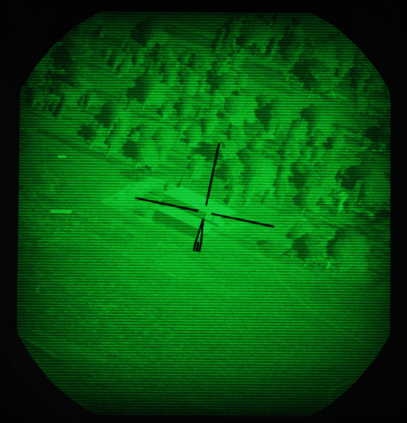
The line of sight can be controlled by the WSO, using the Antenna Hand Control. The camera image is displayed on the DSCG scope and can be viewed by both, the Pilot and the WSO independently.
Targeting Pod
The system has an optical camera for daylight operation with one level of optical zoom, for a wide and narrow (4x) field of view.
Limitations for the pods gimbals are
- Roll: -160 to +110 degrees
- Pitch: -160 to +15 degrees
- Yaw: -15 to +15 degrees


Symbology
The TV image mainly consists of a reticle. The reticle rotates clockwise to indicate the pods current elevation. At a 90 degree rotation, the pod is looking straight down. If the reticle is almost upside down, the pod reached its gimbal limit for the elevation (160 degrees).
The wide field of view is indicated by a circle around the reticle.
On the left, the image displays two cues:
- Time To Go Cue (TTg)
- Release Cue (T0)
During weapon operation, TTg moves down until it intersects T0, indicating the time to release.
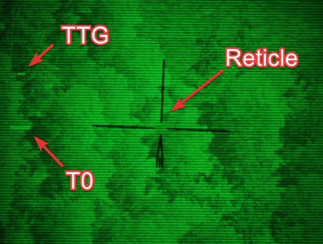

The cues also indicate various situations related to laser operation.
| Indication | T0 | TTG |
|---|---|---|
| not shown | not in TRACK mode | not in TRACK mode |
| steady | commanded to fire laser (full action) | firing laser, accepted range |
| flashing fast | not commanded to fire laser | not firing laser or target too far away |
| flashing slow | firing laser, but range rejected |
Controls
The Pave Spike is mostly interacted with by the WSO, while the Pilot has indicators assisting in keeping the pods line of sight within its limits.
The entire system, known as AN/ASQ-153 Electro-Optical Target Designator System, consists of:
- Range Indicator (Pilot)
- Azimuth-Elevation Indicator (Pilot)
- Laser Coder Control (WSO)
- Target Designator Set Control (WSO)
While the display is shown on the DSCG screens in both cockpits.
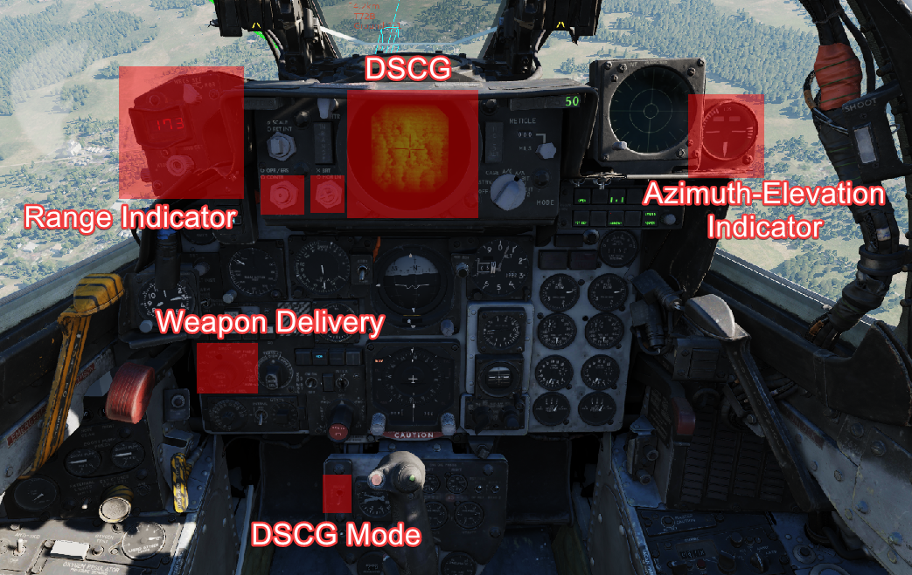 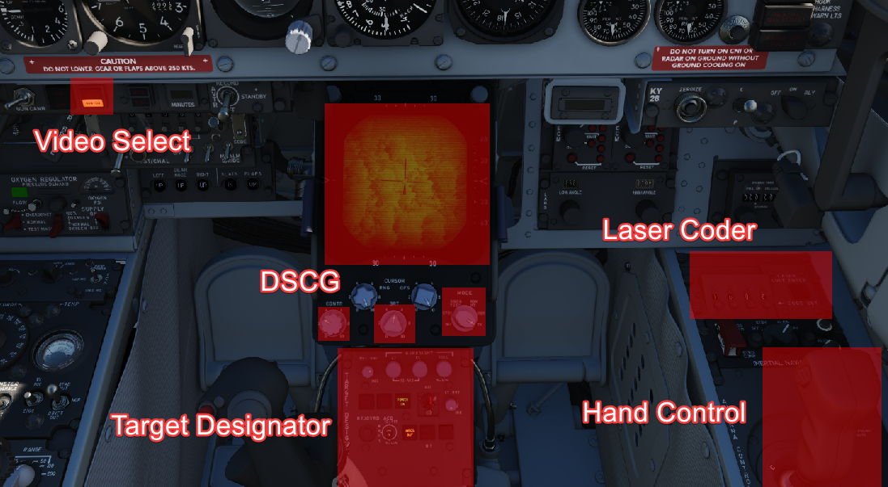
Azimuth-Elevation Indicator
The Azimuth-Elevation Indicator is the main instrument for the pilot to assess the pods current attitude in order to keep the line of sight within the operational limits.
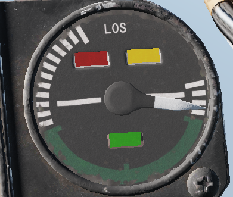
The needle shows the pods roll position from -160 (CW) to +110 (CCW) degrees.
Three flags indicate the elevation:
- green: -120 to -155 degrees
- yellow: -155 to -160 degrees
- red: -160 or beyond degrees
If the needle is kept within the green labelled range and neither the yellow or red flag are shown, the view will not be obstructed by the pod or the aircraft.
Range Indicator
This panel provides the pilot with a readout of the slant range measured by the Pave Spike (x100 ft).

When the Test-Button is pressed, the display shows 888, the knob underneath it controls the brightness of the readout.
The Mode-Knob allows the pilot to select one of two weapon delivery modes available with the pod:
- WRCS - Automatic Delivery
- ROR - Release on Range
In the SET position, the display shows the desired release range used in the ROR mode. The knob below the readout can be used to adjust this range.
Laser Coder Control
The WSO can set the laser code used by the targeting pod by using the four small push-buttons on this panel. Each press will advance the corresponding digit by one. Once a code has been set, it can be transferred to the Pave Spike by pressing the Enter-Button to the right.

The Laser Coder system starts validating the entered code, this process takes about 5 seconds. If the NO-GO lamp is lit, the code is invalid.
Codes directly relate to lasers frequencies, resulting in them having to be between 1111 and 1788 and not use digits 0 or 9 in order to be valid.
When power is applied to the system, it automatically initiates a transfer of the currently set code.
Target Designator Control Set
This is the main panel to interact with the targeting pod.

From left to right, top to bottom, it provides the WSO with:
- Reticle Brightness Knob - change the reticle from black to green
- Az/El/Roll Boresight Knobs - adjust the boresight position of the pod within ±2.5 degrees
- Stow Button - Stow or Unstow the pod
- Laser Ready Button - Arm or Disarm the laser
- Power On Button - Turn the pod on or off
- Currently selected BIT, with push button to advance the BIT
- Light Brightness Knob - adjust brightness of all lights on this panel (except the Overheat lamp)
- Reject/Override Button - Force the use of the laser slant range
- Acquisition Mode Switch - Select the Acquisition Mode (12-VIS, WRCS or 9-VIS)
- WRCS Out Button - Toggle WRCS integration with the pod
- GO/MALF Lamp - Indicates BIT results
- INS Out Button (and Overheat lamp) - Toggle INS integration with the pod
The lamps generally indicate the current status, while the push buttons can be used as a manual command. For example, pressing the Laser Ready Button is not enough for the laser to actually be ready. The lamp will only be lit if all other conditions, such as a valid laser code being set, are met.
Antenna Hand Control
During Track mode, the WSO can manually slew and correct the pods line of sight with the Antenna Hand Control, or Antenna Stick.

The Challenge Button is used to zoom in or out, while the 2-stage trigger is used to switch between modes and fire the laser.
Electrics
The Pave Spike draws its power through 4 circuit breakers on the No. 4 CB Panel (WSO, left wall). They forward current from the left main AC bus and the main DC bus.

All panels of the system are powered directly through the pod, and hence will be turned off if the Pave Spike targeting pod is not equipped.
It is not required to turn on the pod itself in order for power to be routed through the pod to the panels.
INS integration
During normal operation, the pod is connected with the INS. This can be disabled manually by pressing the INS OUT push button.

With INS disabled, the following functions are not available:
- Automatic target stabilization during Track-mode
- Roll-stabilization during 12-VIS Acquisition-mode
- Slant range computation
- WRCS integration
WRCS integration
During normal operation, the pod is connected with the WRCS. This can be disabled manually by pressing the WRCS OUT push button.

Also, the WRCS is disabled automatically without INS integration, or if currently not in DIRECT or TGT FIND weapon mode.

With WRCS disabled, the following functions are not available:
- WRCS Acquisition mode
- Memory mode
- WRCS Automatic Weapon Release
And some functions are degraded, but still available:
- Slant range computation
- Automatic target stabilization during Track-mode
Modes
Prior to being able to designate a target, one has to visually aquire the general target area and put the LOS in the vicinity. This is done by using one of three acquisition modes:
- 12-VIS
- 9-VIS
- WRCS
The modes can be selected by the WSO, using the Acquisition Mode Switch.

Visual modes
In 12-VIS and 9-VIS, the LOS is set to a fix position.
- 12-VIS: 0 degrees roll, -2 degrees elevation, looking slightly nose down
- 9-VIS: -90 degrees roll (CW), -90 degrees elevation (down), looking left
12-VIS can be a great way to find targets of opportunity, as it allows the pilot to put a target directly on the nose. The position also corresponds to the caged HUD reticle. Additionally, if the INS is integrated with the pod, 12-VIS is roll-stabilized.
The use of 9-VIS is very limited. It is intended to aid in acquiring a target while observing an area in a turn. The target has to be put on the extension of the left wing. However, in practice it is very difficult to maintain a turn in such an attitude.
WRCS mode
The main mode to acquire targets is the WRCS mode, in which the LOS is set to the current WRCS target. This usually corresponds to the cursor on the radar screen,but can also be set manually by the WSO. This enables the crew to spot a target, or general target area, by using the radar or entering known coordinates and then slewing the pod to this destination. If no specific target has been inserted, the WRCS usually defaults to the aircraft position, resulting in the pod looking straight down.
The WRCS mode automatically falls back to the 12-VIS mode in case the WRCS integration is deactivated.
Track mode
Once the target, or general target area, has been found using the acquisition modes, the WSO can enter Track-mode by pressing the trigger on the Antenna Hand Control to either Half or Full Action.
In this mode, the Antenna Stick can be moved to slew the pod LOS. Operating the laser is only available in this mode, and can be activated by pressing the trigger on the Antenna Stick to Full Action.
Track mode is indicated by the T0 and TTG cues becoming visible on the display. They also indicate the status during laser operation.
If the INS is integrated with the pod, the image will automatically be space stabilized on the computed target position. Be aware that the stabilization is rudimentary and needs constant correction with the stick for the target to be kept centered.
The stabilization is mostly based on the measured slant range. Accurate slant range can be obtained by firing the laser. Alternatively, it is computed based on the aircraft barometric altitude and the target altitude, which can be set by the WSO on the WRCS panel.

Without a WRCS integration, a target altitude of 0 is assumed, degrading the stabilization.
Note that the pod is not capable of computing a slant range for targets above the own aircraft altitude (for example when attacking up-hill). Since that is measured using the barometric altitude, depending on the pressure-setting, this can lead to erratic behavior during hot days when flying low. Problematic situations like this were commonly referred to as Idiot mode, as the tracking system started to behave very odd and it was very difficult to restore proper behavior. The crew often had to deactivate the INS integration temporarily in order to disable the automatic tracking.
Memory Mode
Whenever a target-insert signal is send, the system activates the Memory-mode, provided it is currently in Track-mode and the WRCS integration is active.
In this mode, the line of sight is slaved to the current WRCS target, even if it is outside of the pods gimbal limits and cannot be displayed currently. The mode acts very similar to the WRCS-Acquisition mode.
The memory mode has to be left explicitly again, by either pressing half or full action on the Antenna Stick.
Target Insert
A target-insert signal is usually initiated by the WSO pressing the target-insert button.

However, when the pod is currently in Track-mode and is maneuvered outside of its gimbal limits, it will automatically initiate a target-insert signal and send its current target position to the WRCS. Note that, if the laser is currently firing, it will automatically be stopped when hitting a limit.
This signal then also causes the pod to enter Memory-mode, in which case it will continue to follow the position now memorized by the WRCS.
Additionally, the signal will also be send if the pod is deselected, i.e.
- Video Select Switch - Weapon, or
- WSO DSCG Mode - not TV (for example switching to Radar)
Laser System
The laser can only be operated in the Track-mode and serves two purposes:
- Guiding laser guided weapons on a target,
- and accurate slant range measurement.
Slant range is, besides weapon impact calculations, used for the automatic target stablization in Track-mode. If not measured with the laser, it is computed based on inaccurate INS and WRCS data, resulting in a degradation of the system.
The laser can be used when the LASER READY lamp is illuminated.

To setup the laser, a valid code has to first be entered on the Laser Coder Control panel and transferred to the pod by pressing the Enter-Button. Make sure that the NO GO light is not illuminated.
The LASER READY push button has to be pushed in for the laser to be armed.
Additionally, the laser is guarded by the nose gear position, which has to be fully retracted to prevent accidental use on the ground.
Once ready, the laser is fired during track mode by pressing full action on the Antenna Stick. The status of the laser operation is indicated by the cues on the display being steady or flashing.
| Indication | T0 | TTG |
|---|---|---|
| not shown | not in TRACK mode | not in TRACK mode |
| steady | commanded to fire laser (full action) | firing laser, accepted range |
| flashing fast | not commanded to fire laser | not firing laser or target too far away |
| flashing slow | firing laser, but range rejected |
The T0 cue indicates intention to fire the laser, while the TTG cue represents the outcome of the laser usage.
The slant range measured by the laser is compared to the slant range computed based on INS and WRCS data. If it is not within ±20% percent of that value, it is rejected. This is indicated by TTG flashing slow.
The system can be forced to use the laser range regardless, by pressing the Reject/Override Button.

In practice, laser measured range is much more accurate than the slant range computed by the system. Hence, pilots developed a habit of always hitting the button whenever they fired the laser.
Weapon Release Modes
The pod offers two additional weapon release modes:
- WRCS Auto Mode
- ROR (Release on Range)
Auto Mode
The main method of weapon delivery with the pod is the WRCS automatic release mode.
The WRCS has to be integrated with the pod for it to be available, and the pilot must select TGT FIND as delivery mode, as well as WRCS on the range indicator.
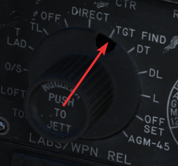 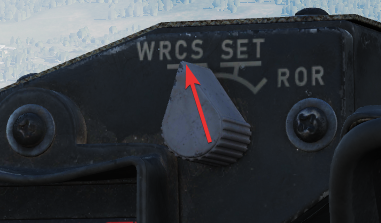
This mode works the same as the Dive Toss mode of the WRCS, just that it will use the pods computed slant range and target instead.

The TTG cue will move down and meet the T0 cue to indicate the time to release.

ROR
Release on range is mostly a backup mode. The pilot must select TGT FIND as delivery mode, and ROR on the range indicator.

Weapons will be released automatically, as soon as the computed slant range is less than the set desired release range. The range is configured on the range indicator, by setting the mode to SET and rotating the knob below the display.

Best results are achieved during level flight.

Stow
After turning on the system, the pod can be unstowed by pressing the STOW push button.
When unstowed, the pod moves according to the current selections and automatically goes into the WIDE FOV.
In the stowed position, the camera is rotated upwards and a cover is moved in front of it. This protects the camera from stones and other hazards during taxi, takeoff or low level flight.
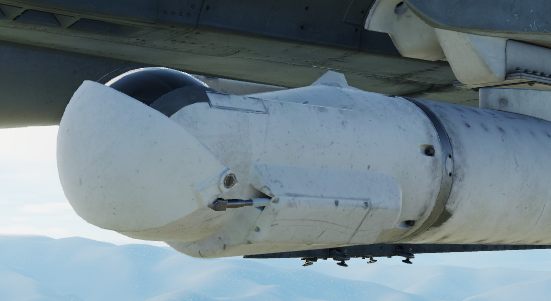
The stow-procedure takes about 5 seconds, with the light indicating the current status.
Note that the stow-position is held electrically and can not be held without power. Unpowered, the pod swings freely with force. Taking off without first applying power to the pod, or flying with the pod being powered off, will cause the pod to leave the stow position. Outside of the stow position, the system will get damaged through hazards and whenever it is forcefully moved into its gimbal limits. Damage will not only offset the boresight position, but also affect other properties, such as movement speed and similar.
Cooling
The targeting pod has a cooling system installed in the rear section, which automatically cools the pod by external airflow.
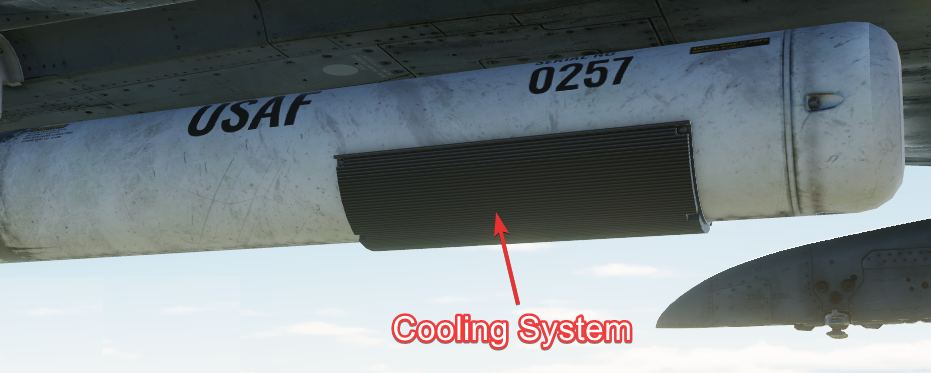
In general, the system is capable of keeping the pods temperature within limits during all normal operation.
However, if the temperature gets out of control, the Overheat lamp will illuminate.

In this case, make sure to turn off the pod immediately and give it some time to cool down first. Ignoring the lamp will cause parts of the pod to melt, damaging it irreparably.
A broken pod is generally indicated by the MALF lamp going on and the display being all black.

To prolong use of the pod and prevent overheating, limit slow and low-level flight, as well as continuous use of the laser. As a rule-of-thumb, do not use the laser for longer than 15 minutes without allowing for cooling between uses. Limit continued slow and low level flight while operating the pod to 30 minutes. For extreme outside temperatures, adjust the limits accordingly.
BITs
The pod has 5 built-in tests, with BIT 1 being the actual mode used during normal operation. They can be activated and switched through by clicking the BIT button below the display. The GO/MALF lights show the result of the BIT:
- GO - test was successful
- MALF - test detected a failure
During normal operation, activated through BIT 1, neither of the lights are illuminated.
BIT 0
All lights on the Target Designator Set Control illuminate with full brightness. The pod does not need to be powered up for this test.

GO/MALF do not indicate test results in this mode.
BIT 1
The circuits are energized and monitored. If any voltage reading is abnormal, MALF illuminates.
GO does not illuminate in this mode.
This is the standard operational mode. The pod can be used normally and the system will continuously monitor the status.
BIT 2
The system simulates track functionality, simulating all inputs, altitude and range data.
After about 15 seconds, the test is finished with either GO or MALF illuminating.
For the test to be successful, the aircraft must not be moving, the pod must be unstowed and INS must be integrated.
Bit 3
This tests the laser energy level. The pod moves to a special position where it looks inside itself, such that the laser fires against a special sensor mounted inside the pod.
The pod must be unstowed and a valid laser code must have been entered, as well as the LASER READY button being pushed in. The nosegear guard is ignored during the test, allowing the use of the laser on ground.
Once the pod has reached the test position, the WSO must press and hold the Reject/Override button to start firing the laser. The laser stops firing when the button is released.
When the laser fires, a 5 second test program starts, with the sensor measuring the laser energy. After the 5 second test, either GO or MALF illuminate to indicate whether the energy level was above the required minimum.
To pilot can assist in telling the WSO that the test position has been reached, as indicated by the Azimuth-Elevation Indicator.
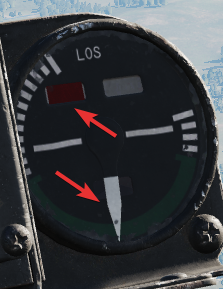
Bit 4
The system tests the ranging computation by feeding a simulated laser slant range of 2100 ft (±200). The pilot can confirm this using the Range Indicator readout.
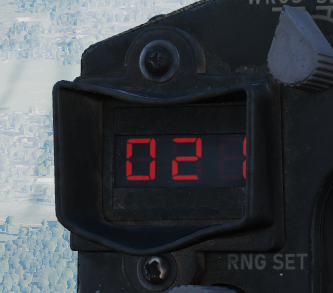
After about 8 to 14 seconds, the test is finished and either GO or MALF is lit.
Upgrades
Based on crew feedback, the Pave Spike targeting pod received two major upgrades, which are available as separate selectable weapon in DCS.
Smart-Track
TCTO 518, known as the Smart-Track upgrade, aims at removing the requirement to press the Reject/Override button to force the laser measured slant range in situations in which the computed slant range was usually too inaccurate.
With the upgrade, the system will automatically accept the laser slant range whenever the pods elevation gimbal is above -7.5 degrees. I.e. in shallow angles, for example during 12-VIS mode.
Fast-Track
The popular upgrade TCTO 519 overhauls the pods gimbal motors, increasing the movement speed from 15 dps to 60 dps.
At this speed, the targeting pod is capable of tracking a target during low altitude high speed flight, such as overflights at 1,000 ft with 500 knots.
Checklists
Turn On
- Ensure power to the aircraft (left main AC bus and main DC bus)
- Ensure corresponding CBs are not pulled (No. 4 CB Panel, WSO left wall)
- POWER ON Button (WSO, Target Designator Set Control) - confirm lamp lit
- BIT 1 - confirm MALF not lit
- Video Select Switch - ASQ-153 (WSO, main panel)
- DSCG Mode - TV (pilot or WSO)
- Unstow by pressing lit STOW button - wait 5 seconds and confirm lamp off
- Confirm DSCG on and displaying pod camera feed
Defensive Systems
AN/ALE-40 Countermeasures System
The AN/ALE-40 countermeasures dispenser set provides the capability of dispensing RR-170 A/AL chaff cartridges or MJU-7/B infrared flare cartridges, or a combination of both. The system is comprised of four chaff dispensers, or a combination of two chaff dispensers and two flare dispensers located on the inboard armament pylons; a programmer and flares select switch in the pilot cockpit; a cockpit control unit (CCU) in the WSO cockpit; indicator lights located in both front and rear cockpit; and a dispense button located both in the pilot and the WSO cockpit. The circuit breaker for the ALE-40 is located on the No.4 Circuit Breaker Panel above the aft left console in the WSO cockpit.

Available loadout combinations are: empty; 120x chaff; 15x Flares + 90x chaff; 30x flares + 60x chaffs; and 30x flares.
Dispensing of countermeasures can be initiated by either the pilot or the WSO from either the front or the rear cockpit. The CCU will initiate the various modes of operation. The programmer will generate the firing commands in different combinations called bursts or salvos. A group of several bursts constitutes a salvo. The pylon mounted dispensers will convert the firing commands to individually sequenced firing signals. If the operation mode is set to chaff, the dispensing will start in the left pylon dispenser and then transfer the dispensing signals to the right pylon dispenser upon depletion of stores in the left dispenser. If the operation mode is set to flare, dispensing will start in the right pylon master dispenser and upon depletion of stores the sequencer switch will transfer the dispensing signal to the left master dispenser. Flares can also be jettisoned from their dispensers at a rate of 10 flares per second by activating the ripple switch located on the CCU.
AN/ALE-40 Cockpit Control Unit (CCU)
The Cockpit Control Unit (CCU) is installed on the left console of the rear cockpit. It consists of a chaff and a flare mode rotary knob, two subtraction counters, two indicator lights, a guarded ripple switch and a chaff/flare dispenser button. The CCU issues dispense and mode signals through the programmer.
Chaff Mode Knob
The chaff operating modes can be selected by turning the chaff mode knob from the OFF position to either the SGL, MULT or PROG positions. With the flare select switch in the NORMAL position and flaps and speed brakes retracted, the switch positions function as follows:
OFF Chaff system not activated/ not operational. SGL A single burst command that is sent to the chaff dispenser whenever either dispense button is pressed. MULT One salvo of fire commands is sent to the dispenser through the programmer whenever either dispense button is pressed. PROG A group of salvo fire commands is sent to the dispenser through the programmer whenever either dispense button is pressed.
Flare Mode Knob
The flare operating modes can be selected by turning the flare mode knob from the OFF position to either the SGL or PROG positions. With the flare select switch in the NORMAL position and flaps and speed brakes retracted, the switch positions function as follows:
OFF Flare system not activated/ not operational. SGL A single burst command that is sent to the flare dispenser whenever either dispense button is pressed. PROG One salvo of fire commands is sent to the dispenser through the programmer whenever either dispense button is pressed.
Chaff and Flare Counters
There are two subtraction counters, one for the chaff system and one for the flare system. They indicate the quantity of remaining chaff and flare cartridge dispensers independent of the mode switch position.
NOTE: When the slave dispenser is set to Chaff Double (CD), the chaff counter should be set to half the number of total chaff cartridges loaded or the chaff counter will show twice the number of chaff cartridge dispenses remaining.
Chaff and Flare Indicator Lights
Both the flare and the chaff system have one green indicator light each. Whenever a mode is selected on the respective mode knob, the corresponding indicator light will illuminate.
NOTE: Both flare and chaff modes can be operated simultaneously provided a mixed chaff/flare loadout has been selected.
Ripple Switch
The ripple switch is guarded. When the guard is lifted and the switch is set to ON, it will initiate flare dispensing regardless of the position of any other switches or mode knobs in the countermeasures system- if the flaps and the speed brakes are retracted. The flares will be dispensed at a rate of 10 flares per second until both left and right pylon dispensers are empty.
Dispense Button (Rear Cockpit)
When pressing the dispense button chaff/flare dispensing is initiated as set on the CCU and AN/ALE-40 programmer if the flaps and speed brakes are retracted, and provided either or both the chaff/flare mode knobs are in any position other than OFF.
AN/ALE-40 Programmer
The AN/ALE-40 Programmer contains the controls and circuitry used to send specific fire commands to the chaff/flare dispensers. The following functions are available:
Control Function
CHAFF BURST: Selects the quantity of chaff bursts per salvo COUNT 1, 2, 3, 4, 6, 8 (units) INTERVAL .1, .2, .3, .4 Selects the time interval between each chaff burst (seconds) CHAFF SALVO: Selects the number of salvos COUNT 1, 2, 4, 8, C (continuous) INTERVAL 1, 2, 3, 4, Selects the time interval in seconds between each salvo 5, 8, R (random) FLARE BURST: Selects the quantity of flare bursts COUNT 1, 2, 4, 8, C (continuous) INTERVAL 3, 4, 6, 8, Selects the time interval between each flare burst 10 (seconds)
Flares Select Switch
If the flares select switch is in the NORMAL position, it arms the countermeasures dispenser system and allows for chaffs and flares to be dispensed as set by the CCU and the programmer by pressing either dispense button.
If the flares select switch is in the FLARES position it only affects the front cockpit dispense button by ignoring all switches and knobs in the countermeasures system, provided that the flaps and speed brakes are retracted. This allows the pilot to dispense a single flare each time he presses the dispense button. Rear cockpit dispense functions are unaffected by the switch position.
Flares Indicator Light (Amber)
The FLARES indicator light is amber. It illuminates when the flares select switch is set to FLARES. When illuminated, flares can be dispensed by pressing the front cockpit dispense button regardless of programmer and CCU switch and knob positions, if the flaps and speed brakes are retracted.
AN/ALE-40 Power On Indicator Light (Green)
The AN/ALE-40 power on indicator light is green. It illuminates when the flares select switch is set to NORMAL and either (or both) of the chaff and flare mod knobs are in any position other than OFF.
Dispense Button (Front Cockpit)
When pressing the dispense button chaff/flare dispensing is initiated as set on the CCU and AN/ALE-40 programmer if the flaps and speed brakes are retracted and the flares select switch is set to NORMAL. Additionally single unit flare dispensing can be initiated by a single button press if the flares select switch is set to FLARES.
AN/ALE-40 Dispensers
The AN/ALE-40 countermeasures dispensers are divided into two distinct dispenser configurations. The master (outboard) dispenser contains the electronics and sequencer switch for both dispensers on each pylon and is installed on the outboard side of the inboard armament pylons. The slave (inboard) dispenser is installed on the inboard side of the inboard armament pylons and is connected to the master dispenser by an interconnect cable. The aircraft can be configured either with four chaff payload modules on all four dispensers or two chaff payload modules on the slave dispensers and two flare payload modules on the master dispensers. Only chaff payload modules can be installed on the slave dispensers; flare payload modules can only be installed on the master dispensers.
Master Dispenser Assembly
NOTE: Operation of the master dispenser assembly is done automatically by the ground crew in DCS, according to the AN/ALE-40 loadout selected in the loadout menu.
One master dispenser assembly is installed on the outboard side of each inboard armament pylon. It consists of a sequencer switch, a breech assembly, a RESET/OPERATE circuit breaker switch, a payload control switch, a safety pin switch with safety pin and warning streamer and relevant electrical circuitry. The sequencer switch converts the firing commands into individual firing signals for each pyrotechnic squib in both the master and slave dispensers. The breech assembly provides the interface to mount the chaff or flare payload modules. Insertion of the safety pin removes electrical power to both pylon mounted dispensers. After a full chaff or flare module has been loaded, the RESET/OPERATE switch is placed in OPERATE. The chaff or flare sections will fire in sequence. After flight, if a partial load of chaff or flares remains, the switch should be left in OPERATE. If the switch is moved to RESET, the empty chaff or flare stations have to be stepped through before loaded stations will fire. The payload selector switch positions C (chaff) and F (flare) only define the master dispenser mode of deployment and are set automatically in DCS according to the selected loadout.
Slave Dispenser Assembly
Note: The payload selector switch position is set to CS (chaff single dispense) by default in DCS. To set it to CD (chaff double dispense), you have to do so either in the Mission Editor Unit Aircraft Additional Options tab or in the kneeboard. This action can only be performed on the ground and/or before mission start.
One slave dispenser assembly is installed on the inboard side of each inboard armament pylon. It contains a payload selector switch to set either chaff single or chaff double dispense, a breech assembly and relevant electrical circuitry. If the payload selector switch is left in the default CS position, one chaff cartridge will be dispensed for each chaff burst commanded. If the payload selector switch is set to the CD position, two chaff cartridges will be dispensed simultaneously, one from each dispenser, for each chaff burst commanded. The breech assembly provides the interface to mount the chaff payload module.
Flare Housing Adapter
The flare housing adapter is installed between the master dispenser assembly and the flare payload module. The wedge shaped adapter ensures that the flares will be ejected aft and down from the aircraft. It cannot be mounted to the slave dispenser.
Chaff Payload Module and Cartridges
The chaff payload module is attached to the master or slave dispenser breech assembly with four quick release fasteners. The chaff cartridge consists of a basic plastic sleeve, chaff dipoles and a plastic end cap. When dispensed the chaff dipoles are ejected from the sleeves and leave the disposable sleeve and empty squib case behind. The cartridge base provides a recess for the chaff pyrotechnic squib.
WARNING: Accidental discharge of the chaff cartridges can cause injury to personnel or damage to the aircraft. The master dispenser safety pin must be installed at all times when loading, unloading or maintaining the system.
Flare Payload Module and Cartridges
The flare payload module can only be installed on the master dispenser assembly. The flare housing adapter serves as the interface. The flare cartridge consists of a metal outer sleeve, a flare element, a safing and initiation device and a plastic end cap. An indentation in the cartridge base allows for proper flare installation.
WARNING: Accidental discharge of the flare cartridges can cause injury to personnel or damage to the aircraft. The master dispenser safety pin must be installed at all times when loading, unloading or maintaining the system.
Pyrotechnic Squibs
The chaff pyrotechnic squibs are installed immediately prior to use and are stored separately from the chaff cartridges. They are metal encased and electrically fired.
The flare pyrotechnic squibs are larger in diameter and have an O-ring groove. They are installed immediately prior to use and are stored separately from the flare cartridges.